9. Case Study
9.1. Introduction
We will present a case study previously published in an article available at the URL [http://tahe.developpez.com/dotnet/pam-aspnet/]. In that article, the case study is implemented using classic ASP.NET and the NHibernate ORM. Here, we will implement it using ASP.NET MVC and the Entity Framework ORM. As in the existing article, the case study is presented as a university lab assignment. It is therefore intended for students. For all questions, references to the chapters we have just detailed are provided to indicate useful reading material.
9.2. : The Problem to Solve
We want to write a web application that allows a user to simulate payroll calculations for child care providers at the "Maison de la petite enfance" association in a local municipality. We will focus as much on the organization of the application’s .NET code as on the code itself.
The application will be a single-page application (SPA) and will use only Ajax calls to communicate with the server. It will present the user with the following views:
- the [VueSaisies] view, which displays the simulation form

- the [VueSimulation] view used to display the detailed results of the simulation:

- the [SimulationsView] view, which lists the simulations performed by the client

- the [VueSimulationsVides] view, which indicates that the client has no simulations or no more simulations:

- the [VueErreurs] view, which indicates one or more errors (here, the MySQL DBMS has been shut down):

9.3. Application Architecture
The application architecture will be as follows:
 |
The [EF5] layer refers to the Entity Framework 5 ORM. The DBMS used will be MySQL.
We will first build this application with a simulated [business] layer:
 |
This will allow us to focus solely on the [web] layer. The simulated [business] layer will adhere to the interface of the actual [business] layer. Once the [web] layer is operational, we will then build the [business], [DAO], and [EF5] layers.
9.4. The database
The static data needed to build the pay stub is stored in a MySQL database named [dbpam_ef5] (pam = Paie Assistante Maternelle). This database has an administrator named root with no password. It has three tables:

There is a foreign key relationship between the EMPLOYEES(INDEMNITE_ID) column and the INDEMNITIES(ID) column. The structure of this database is dictated by its use with EF5. We will revisit this when we build the lower layers of the application.
Structure:
IDprimary key automatically incremented by the DBMSSSEmployee's social security number - uniqueNAMEEmployee's last nameFIRST NAMEfirst nameADDRESStheir addressCITYhis/her cityZIPhis/her zip codeVERSIONINGan integer that auto-incremented each time the record is modifiedINDEMNITY_IDforeign key on the [ID] field of the [INDEMNITES] table

Its contents could be as follows:
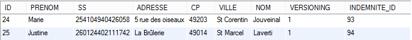
Structure:
IDPrimary key automatically incremented by the DBMSCSGRDSpercentage: general social contribution + contribution to social debt repaymentCSGDpercentage: deductible general social contributionSECUpercentage: social securityPENSIONpercentage: supplemental pension + unemployment insuranceVERSIONINGan integer that is auto-incremented each time the record is modified

Its contents could be as follows:
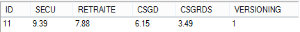
Social security contribution rates are independent of the employee. The previous table has only one row.
IDprimary key automatically incremented by the DBMSINDEXsalary index - uniqueBASE_HOURnet price in euros for one hour of on-call dutyDAILY_MAINTENANCEdaily allowance in euros per day of careMEAL_DAYMeal allowance in euros per day of carePAID_LEAVE_ALLOWANCEPaid leave allowance. This is a percentage applied to the base salary.VERSIONINGAn integer that is auto-incremented each time the record is modified

Its content could be as follows:

9.5. Calculation method for the salary of a child care provider
We will now explain how a child care provider’s monthly salary is calculated. As an example, we will use the salary of Ms. Marie Jouveinal, who worked 150 hours over 20 days during the pay period.
The following factors are taken into account: | [TOTALHOURS]: total hours worked in the month [TOTALDAYS]: total days worked in the month | [TOTALHOURS]=150 [TOTALDAYS] = 20 |
The child care provider's base salary is calculated using the following formula: | [BASESALARY] = ([TOTALHOURS] * [HOURLYRATE]) * (1 + [CPALLOWANCE] / 100) | [BASESALARY]=(150*[2.1])*(1+0.15)= 362.25 |
A number of social security contributions must be deducted from this base salary: | General social contribution and contribution to the repayment of the social debt: [BASESALARY]*[CSGRDS/100] Deductible general social contribution: [BASESALARY]*[CSGD/100] Social Security, Widow’s, and Old-Age Benefits: [BASESALARY]*[SECU/100] Supplementary Pension + AGPF + Unemployment Insurance: [BASESALARY]*[PENSION/100] | CSGRDS: 12.64 CSGD: 22.28 Social Security: 34.02 Pension: 28.55 |
Total Social Security Contributions: | [SOCIALCONTRIBUTIONS] = [BASESALARY] * (CSGRDS + CSGD + SECU + RETIREMENT) / 100 | [SOCIALCONTRIBUTIONS]=97.48 |
In addition, the child care provider is entitled to a daily living allowance and a meal allowance for each day worked. As such, she receives the following allowances: | [Allowances]=[TOTALDAYS]*(DAILYMAINTENANCE+DAILYMEAL) | [ALLOWANCES]=104 |
In the end, the net salary to be paid to the child care provider is as follows: | [BASESALARY] - [SOCIALSECURITYCONTRIBUTIONS] + [ALLOWANCES] | [NET SALARY]=368.77 |
9.6. The Visual Studio project for the [web] layer
The Visual Web Developer project for the application will be as follows:
 |
- in [1], the general structure of the [pam-web-01] project;
- in [2], the [Content] folder is where the project's static resources are stored:
- [indicator.gif]: the animated image showing the wait for an Ajax request to complete,
- [standard.jpg]: the background image for the various views,
- [Site.css]: the application’s style sheet;
- in [3], the application’s single controller [PamController];
- in [4], classes required by the application but which cannot be classified as MVC components:
- [ApplicationModelBinder]: the class that allows [Application] scope data to be included in the action model,
- [SessionModelBinder]: the class that allows data from the [Session] scope to be included in the action model,
- [Static]: a helper class with static methods;
- in [5], the application models, whether action or view models:
- [ApplicationModel]: a model containing [Application] scope data,
- [SessionModel]: a model containing [Session] scope data,
- [Simulation]: a class encapsulating the elements of a salary calculation simulation,
- [IndexModel]: model of the first [Index] view displayed by the application;
- in [6], the JS scripts required for the application’s globalization;
- in [7], the JQuery family JS scripts required for internationalization, client-side validation, and AJAX functionality of the application;
- in [8], [myScripts.js] is the file containing our own JS scripts;
- in [9], the application views:
- [Index]: the home page,
- [Form]: form for entering employee information and their hours and days worked,
- [Simulation]: the view displaying a simulation,
- [Simulations]: the view displaying the list of simulations performed,
- [Errors]: the view displaying a list of any errors,
- [InitFailed]: the view displaying error messages if the application initialization fails;
- in [10], the application master page [_Layout];
- in [11], the [Web.config] and [Global.asax] files used to configure the application.
9.7. Step 1 – Setting up the simulated [business] layer
From this point on, we describe the steps to follow to complete the case study. Where relevant, we provide the chapter number so you can review it if needed to complete the task. Some project elements are provided in a folder [aspnetmvc-support.zip] available on this document’s website. Inside, you’ll find the [case-study-support] folder with the following contents:

The project also includes elements presented in previous chapters. You can simply retrieve these by copying and pasting between this PDF and Visual Studio.
9.7.1. The Visual Studio solution for the complete application
First, we will create a Visual Studio solution in which we will create two projects:
- a project for the simulated [business] layer;
- a project for the MVC web layer.
 |
We will use two tools:
- Visual Studio Express 2012 for Desktop, which will be used to build the [business] layer;
- Visual Studio Express 2012 for the Web, which will be used to build the [web] layer.
Using Visual Studio Express for Desktop, we create a [pam-td] solution:
 |
- In [1], select a C# application;
- In [2], select [Console Application];
- In [3], give the solution a name;
- In [4], create a directory for this solution;
- in [5], name the [business] layer;
- in [6], the generated solution.
9.7.2. The [business] layer's interface
In a layered architecture, it is good practice for communication between layers to occur via interfaces:
 |
What interface should the [business] layer present to the [web] layer? What interactions are possible between these two layers? Let’s recall the web interface that will be presented to the user:
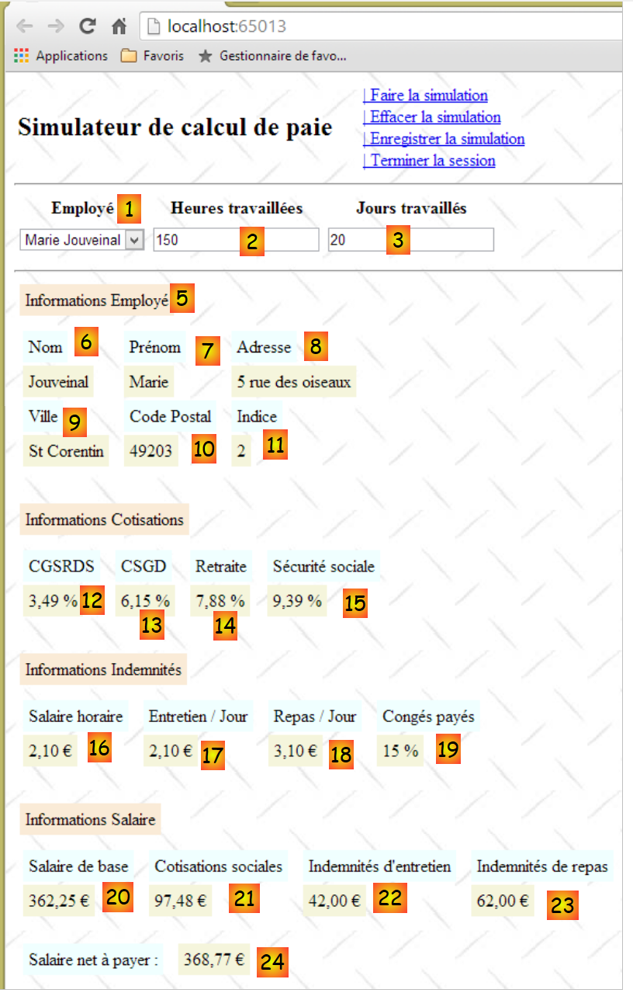 |
- Upon initial display of the form, the list of employees should appear in [1]. A simplified list is sufficient (Last Name, First Name, SSN). The SSN is required to access additional information about the selected employee (fields 6 through 11).
- Information 12 through 15 are the various contribution rates.
- Information 16 through 19 are the employee’s allowances
- Information 20 through 24 are the salary components calculated based on user entries 1 through 3.
The [IPamMetier] interface provided to the [web] layer by the [business] layer must meet the above requirements. There are many possible interfaces. We propose the following:
using Pam.Metier.Entites;
namespace Pam.Metier.Service
{
public interface IPamMetier
{
// list of all employee identities
Employe[] GetAllIdentitesEmployes();
// ------- salary calculation
FeuilleSalaire GetSalaire(string ss, double heuresTravaillées, int joursTravaillés);
}
}
- line 7: the method that will populate the combo box [1]
- line 10: the method that will retrieve information 6 through 24. These have been collected in an object of type [PayrollSheet], which we will describe shortly.
We will place this interface in a [business/department] folder:
 |
9.7.3. Entities in the [business] layer
The previous interface uses two classes, [Employee] and [PayStub], which we need to define:
- [Employee] represents a row in the [employees] table of the database;
- [PayStub] represents an employee’s pay stub.
The entities will be placed in a [business/entities] folder within the project:
 |
In the final architecture, the [business] layer will manipulate database entity representations:
We will use the following classes to represent the rows of the three database tables. Refer to Section 9.4 for the meanings of the various fields.
[Employee] Class
It represents a row in the [employees] table. Its code is as follows:
using System;
namespace Pam.Metier.Entites
{
public class Employe
{
public string SS { get; set; }
public string Nom { get; set; }
public string Prenom { get; set; }
public string Adresse { get; set; }
public string Ville { get; set; }
public string CodePostal { get; set; }
public Indemnites Indemnites { get; set; }
// signature
public override string ToString()
{
return string.Format("Employé[{0},{1},{2},{3},{4},{5}]", SS, Nom, Prenom, Adresse, Ville, CodePostal);
}
}
}
Class [Allowances]
It represents a row in the [indemnites] table. Its code is as follows:
using System;
namespace Pam.Metier.Entites
{
public class Indemnites
{
public int Indice { get; set; }
public double BaseHeure { get; set; }
public double EntretienJour { get; set; }
public double RepasJour { get; set; }
public double IndemnitesCp { get; set; }
// signature
public override string ToString()
{
return string.Format("Indemnités[{0},{1},{2},{3},{4}]", Indice, BaseHeure, EntretienJour, RepasJour, IndemnitesCp);
}
}
}
Class [Contributions]
It represents a row in the [contributions] table. Its code is as follows:
using System;
namespace Pam.Metier.Entites
{
public class Cotisations
{
public double CsgRds { get; set; }
public double Csgd { get; set; }
public double Secu { get; set; }
public double Retraite { get; set; }
// signature
public override string ToString()
{
return string.Format("Cotisations[{0},{1},{2},{3}]", CsgRds, Csgd, Secu, Retraite);
}
}
}
Note that the classes do not include the [ID] and [VERSIONING] columns from the tables. These columns, which are useful when using the EF5 ORM, are not needed in the context of the simulated [business] layer.
The [FeuilleS al] class encapsulates information 6 through 24 from the form already presented:
namespace Pam.Metier.Entites
{
public class FeuilleSalaire
{
// automatic properties
public Employe Employe { get; set; }
public Cotisations Cotisations { get; set; }
public ElementsSalaire ElementsSalaire { get; set; }
// ToString
public override string ToString()
{
return string.Format("[{0},{1},{2}]", Employe, Cotisations, ElementsSalaire);
}
}
}
- line 7: fields 6 through 11 for the employee whose salary is being calculated, and fields 16 through 19 for their allowances. Note that an [Employee] object encapsulates an [Allowances] object representing their allowances;
- line 8: information 12 through 15;
- line 9: information 20 through 24;
- lines 12–14: the [ToString] method.
The [Elements Salaire] class encapsulates information 20 through 24 from the form:
namespace Pam.Metier.Entites
{
public class ElementsSalaire
{
// automatic properties
public double SalaireBase { get; set; }
public double CotisationsSociales { get; set; }
public double IndemnitesEntretien { get; set; }
public double IndemnitesRepas { get; set; }
public double SalaireNet { get; set; }
// ToString
public override string ToString()
{
return string.Format("[{0} : {1} : {2} : {3} : {4} ]", SalaireBase, CotisationsSociales, IndemnitesEntretien, IndemnitesRepas, SalaireNet);
}
}
}
- lines 6–10: salary components as explained in the business rules described above;
- line 6: the employee's base salary, based on the number of hours worked;
- line 7: contributions deducted from this base salary;
- lines 8 and 9: allowances to be added to the base salary, based on the employee’s grade and the number of days worked;
- line 10: the net salary to be paid;
- lines 14–17: the class’s [ToString] method.
9.7.4. The [PamException] class
We create a specific exception type for our application. It is the following [PamException] type:
using System;
namespace Pam.Metier.Entites
{
// exceptional class
public class PamException : Exception
{
// the error code
public int Code { get; set; }
// manufacturers
public PamException()
{
}
public PamException(int Code)
: base()
{
this.Code = Code;
}
public PamException(string message, int Code)
: base(message)
{
this.Code = Code;
}
public PamException(string message, Exception ex, int Code)
: base(message, ex)
{
this.Code = Code;
}
}
}
- line 6: the class derives from the [Exception] class;
- line 10: it has a public property [Code] which is an error code;
- In our application, we will use two types of constructors:
- the one in lines 23–27, which can be used as shown below:
```text
throw new PamException("Problème d'accès aux données",5);
```
- (continued)
- or the one in lines 29–33, designed to propagate an exception that has occurred by wrapping it in a [PamException] exception:
try{
....
}catch (IOException ex){
// on encapsule l'exception ex
throw new PamException("Problème d'accès aux données",ex,10);
}
This second method has the advantage of not losing the information that the first exception may contain.
9.7.5. Implementation of the [business] layer
The [IPamMetier] interface will be implemented by the following [PamMetier] class:
using System;
using Pam.Metier.Entites;
using System.Collections.Generic;
namespace Pam.Metier.Service
{
public class PamMetier : IPamMetier
{
// list of cached employees
public Employe[] Employes { get; set; }
// employees indexed by their SS number
private IDictionary<string, Employe> dicEmployes = new Dictionary<string, Employe>();
// list of employees
public Employe[] GetAllIdentitesEmployes()
{
...
// we return the list of employees
return Employes;
}
// salary calculation
public FeuilleSalaire GetSalaire(string ss, double heuresTravaillées, int joursTravaillés)
{
...
}
}
- line 7: the [PamMetier] class implements the [IPamMetier] interface;
- line 10: the [PamMetier] class keeps the list of employees in cache;
- line 12: a dictionary that associates an employee with their social security number;
- lines 15–20: the method that returns the list of employees;
- lines 23–26: the method that calculates an employee’s salary.
The [GetAllIdentitesEmploye] method is as follows:
// list of employees
public Employe[] GetAllIdentitesEmployes()
{
if (Employes == null)
{
// we create a table of three employees
Employes = new Employe[3];
Employes[0] = new Employe()
{
SS = "254104940426058",
Nom = "Jouveinal",
Prenom = "Marie",
Adresse = "5 rue des oiseaux",
Ville = "St Corentin",
CodePostal = "49203",
Indemnites = new Indemnites() { Indice = 2, BaseHeure = 2.1, EntretienJour = 2.1, RepasJour = 3.1, IndemnitesCp = 15 }
};
dicEmployes.Add(Employes[0].SS, Employes[0]);
Employes[1] = new Employe()
{
SS = "260124402111742",
Nom = "Laverti",
Prenom = "Justine",
Adresse = "La brûlerie",
Ville = "St Marcel",
CodePostal = "49014",
Indemnites = new Indemnites() { Indice = 1, BaseHeure = 1.93, EntretienJour = 2, RepasJour = 3, IndemnitesCp = 12 }
};
dicEmployes.Add(Employes[1].SS, Employes[1]);
// a fictitious employee who will not be included in the dictionary
// to simulate a non-existent employee
Employes[2] = new Employe()
{
SS = "XX",
Nom = "X",
Prenom = "X",
Adresse = "X",
Ville = "X",
CodePostal = "X",
Indemnites = new Indemnites() { Indice = 0, BaseHeure = 0, EntretienJour = 0, RepasJour = 0, IndemnitesCp = 0 }
};
}
// we return the list of employees
return Employes;
}
- line 4: check if the list of employees has not already been created;
- line 7: if not, create an array of three employees;
- lines 8–17: the first employee;
- line 18: it is added to the dictionary;
- lines 19–28: the second employee;
- line 29: he is added to the dictionary;
- lines 32–42: the third employee. This one is not added to the dictionary for a reason we will explain.
The [GetSalary] method will be as follows:
// salary calculation
public FeuilleSalaire GetSalaire(string ss, double heuresTravaillées, int joursTravaillés)
{
// we retrieve employee n° SS
Employe e = dicEmployes.ContainsKey(ss) ? dicEmployes[ss] : null;
// exists?
if (e == null)
{
throw new PamException(string.Format("L'employé de n° SS [{0}] n'existe pas", ss), 10);
}
// a fictitious payslip is returned
return new FeuilleSalaire()
{
Employe = e,
Cotisations = new Cotisations() { CsgRds = 3.49, Csgd = 6.15, Secu = 9.38, Retraite = 7.88 },
ElementsSalaire = new ElementsSalaire() { CotisationsSociales = 100, IndemnitesEntretien = 100, IndemnitesRepas = 100, SalaireBase = 100, SalaireNet = 100 }
};
}
- line 2: the method receives the employee's social security number for whom we want to calculate the salary, the number of hours worked, and the number of days worked;
- line 5: we look up the employee in the dictionary. Remember that one of them is not there;
- lines 7–10: if the employee is not found, a [PamException] is thrown;
- lines 12–17: a dummy pay stub is returned.
9.7.6. The console test for the [business] layer
The [business] layer project currently looks like this:
 |
The [Program] class above will test the methods of the [IPamMetier] interface. A basic example could be the following:
using Pam.Metier.Entites;
using Pam.Metier.Service;
using System;
namespace Pam.Metier.Tests
{
class Program
{
public static void Main()
{
// instantiation layer [business]
IPamMetier pamMetier = new PamMetier();
// list of employees
Employe[] employes = pamMetier.GetAllIdentitesEmployes();
Console.WriteLine("Liste des employés--------------------");
foreach (Employe e in employes)
{
Console.WriteLine(e);
}
// payslip calculations
Console.WriteLine("Calculs de feuilles de salaire-----------------");
Console.WriteLine(pamMetier.GetSalaire(employes[0].SS, 30, 5));
Console.WriteLine(pamMetier.GetSalaire(employes[1].SS, 150, 20));
try
{
Console.WriteLine(pamMetier.GetSalaire(employes[2].SS, 150, 20));
}
catch (PamException ex)
{
Console.WriteLine(string.Format("PamException : {0}", ex.Message));
}
}
}
}
- line 12: instantiation of the [business] layer;
- lines 14–19: testing the [GetAllEmployeeIDs] method of the [IPamMetier] interface;
- lines 21–31: testing the [GetSalaire] method of the [IPamMetier] interface.
Running this console program produces the following results:
The reader is invited to make the connection between these results and the executed code.
In order to use this project in the web project we are going to build, we are turning it into a class library:
 |
- in [1], in the properties of the [Program.cs] file;
- in [2], we specify that the file will not be part of the generated assembly;
- in [3, 4], in the properties of the [pam-metier-simule] project, under the [Application] option [3], we specify [4] that the build must produce a class library (in the form of a DLL).
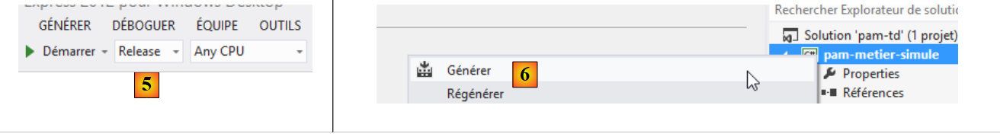 |
- in [5], we specify a [Release] assembly. The other type is [Debug]. The assembly then contains information to facilitate debugging;
- In [6], generate the [pam-metier-simule] project;
 |
- In [7], display all files in the solution;
- In [8], in the [bin/Release] folder, the DLL for our project.
9.8. Step 2: Setting up the web application
In the previous Visual Studio solution, we will create the project for the MVC web layer.
 |
Using Visual Studio Express for the Web, we open the [pam-td] solution previously created with Visual Studio Express for the Desktop.
 |
- In [1], the [pam-td] solution has been loaded into Visual Studio Express for the Web;
- In [2], the solution and the project for the simulated [business] layer that we just created.
In this new step, we will create the skeleton of the web application.
 |
- In [1], we add a new project to the [pam-td] solution;
 |
- in [2], we select an ASP.NET MVC 4 project;
- named [pam-web-01] [3];
- In [4], select the Basic ASP.NET MVC template;
- in [5], the project is created;
 |
- in [6], we make the new project the solution's startup project, the one that will run when we press [Ctrl-F5];
- In [7], the name of the new project is bolded, indicating that it is the solution's startup project.
Now, using Windows Explorer, replace the project’s [Content] folder with the [étudedecas-support / web / Content] folder. Once this is done, you must include the new files in the [pam-web-01] project. Proceed as follows:
 |
- In [1], refresh the solution;
- in [2], display all files in the solution;
- in [3], an [Images] folder appears;
- which you include in the project in [4].
In the [Scripts] folder, add the JQuery Globalization [1] scripts required for client-side validation.
 |
The master page [_Layout.cshtml] [2] will have the following content:
<!DOCTYPE html>
<html>
<head>
<title>@ViewBag.Title</title>
<meta charset="utf-8" />
<meta name="viewport" content="width=device-width" />
<link rel="stylesheet" href="~/Content/Site.css" />
<script type="text/javascript" src="~/Scripts/jquery-1.8.2.min.js"></script>
<script type="text/javascript" src="~/Scripts/jquery.validate.min.js"></script>
<script type="text/javascript" src="~/Scripts/jquery.validate.unobtrusive.min.js"></script>
<script type="text/javascript" src="~/Scripts/globalize/globalize.js"></script>
<script type="text/javascript" src="~/Scripts/globalize/cultures/globalize.culture.fr-FR.js"></script>
<script type="text/javascript" src="~/Scripts/jquery.unobtrusive-ajax.js"></script>
<script type="text/javascript" src="~/Scripts/myScripts.js"></script>
</head>
<body>
<table>
<tbody>
<tr>
<td>
<h2>Simulateur de calcul de paie</h2>
</td>
<td style="width: 20px">
<img id="loading" style="display: none" src="~/Content/images/indicator.gif" />
</td>
<td>
<a id="lnkFaireSimulation" href="javascript:faireSimulation()">| Faire la simulation<br />
</a>
<a id="lnkEffacerSimulation" href="javascript:effacerSimulation()">| Effacer la simulation<br />
</a>
<a id="lnkVoirSimulations" href="javascript:voirSimulations()">| Voir les simulations<br />
</a>
<a id="lnkRetourFormulaire" href="javascript:retourFormulaire()">| Retour au formulaire de simulation<br />
</a>
<a id="lnkEnregistrerSimulation" href="javascript:enregistrerSimulation()">| Enregistrer la simulation<br />
</a>
<a id="lnkTerminerSession" href="javascript:terminerSession()">| Terminer la session<br />
</a>
</td>
</tbody>
</table>
<hr />
<div id="content">
@RenderBody()
</div>
</body>
</html>
Note: Line 8, adjust the jQuery version to match your version of Visual Studio.
- Line 7: reference to the application's style sheet;
- Lines 8–10: references to the scripts required for client-side validation;
- lines 11–12: references to the scripts required for entering French decimal numbers with a comma;
- line 13: reference to the scripts required for Ajax mode;
- Line 14: application-specific scripts;
- line 24: the loading image for Ajax calls;
- lines 26–39: six JavaScript links;
- Line 43: the section where the application's various views will be displayed;
- Line 44: the body of the application's various views.
Next, we will modify the application's default route:
 |
The [RouteConfig] file will have the following content:
using System.Web.Mvc;
using System.Web.Routing;
namespace pam_web_01
{
public class RouteConfig
{
public static void RegisterRoutes(RouteCollection routes)
{
routes.IgnoreRoute("{resource}.axd/{*pathInfo}");
routes.MapRoute(
name: "Default",
url: "{controller}/{action}",
defaults: new { controller = "Pam", action = "Index" }
);
}
}
}
- line 14: URLs will be in the form [{controller}/{action}];
- line 15: if no action is specified, the [Index] action will be used. If no controller is specified, the [Pam] controller will be used.
As a result of this configuration, the URL [/] is equivalent to the URL [/Pam/Index]. Since our application is an API, the URL [/] will be its only URL.
Create the [Pam] controller:

Modify the [PamController] as follows:
using System.Web.Mvc;
namespace Pam.Web.Controllers
{
public class PamController : Controller
{
[HttpGet]
public ViewResult Index()
{
return View();
}
}
}
- line 3: we place the controller in the [Pam.Web.Controllers] namespace;
- line 7: the [Index] action will only handle the HTTP GET request;
- line 8: we return a [ViewResult] type rather than an [ActionResult] type.
Now create the [Index.cshtml] view displayed by the [Index] action above:
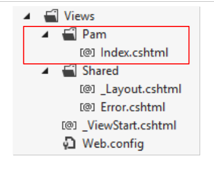 |
Modify [Index.cshtml] as follows:
@{
ViewBag.Title = "Pam";
}
<h2>Formulaire</h2>
Run the application by pressing [Ctrl-F5]. You should see the following page:

Task: Explain what happened.
The application uses a style sheet referenced in the master page [_Layout.cshtml]:
<link rel="stylesheet" href="~/Content/Site.css" />
The stylesheet [/Content/Site.css] defines a background image for the application's pages:
body {
background-image: url("/Content/Images/standard.jpg");
}
 |
9.9. Step 3: Implementing the SPU Model
We want to write an application following the SPU (Single-Page Application) model described in Section 7.5 and Section 7.6. The single page is the one loaded by the browser when the application starts:
 |
- the [1] section above is the fixed part of the single page. We have seen that it is provided by the master page [_Layout.cshtml];
- Part [2] is the variable part of the single page. It is located within the [content] ID region of the master page [_Layout.cshtml]:
<!DOCTYPE html>
<html>
<head>
<title>@ViewBag.Title</title>
...
<script type="text/javascript" src="~/Scripts/myScripts.js"></script>
</head>
<body>
<table>
...
</table>
<hr />
<div id="content">
@RenderBody()
</div>
</body>
</html>
The various page fragments of the application will be displayed in the region with the ID [content] on line 13. They will be displayed via Ajax calls. The JavaScript scripts executing these calls are in the file [myScripts.js] referenced on line 6. Create this file, which we will need:
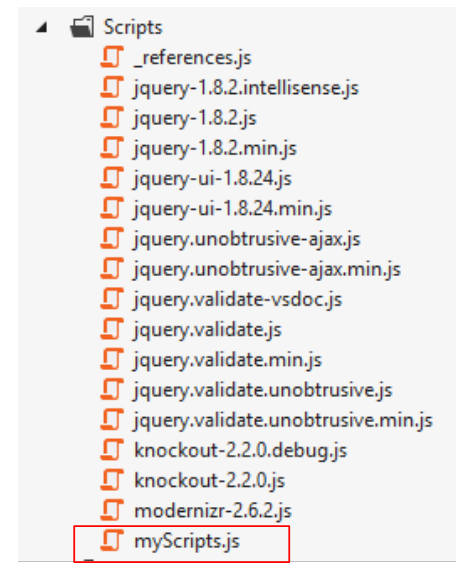 |
We are now following the APU model described in Section 7.6. Reread that section if you have forgotten it. We will now set up the various page fragments displayed by the application.
9.9.1. JavaScript Developer Tools
Remember that with the Chrome browser, you have a range of tools for debugging the HTML, CSS, and JavaScript of your pages. These tools were partially introduced in Section 7.2. In the APU model, browsers cache the JavaScript scripts referenced by the application’s first page. Therefore, you must remember to clear this cache when you modify your scripts; otherwise, the changes may not be applied. Here’s how to do it in Chrome:
- Press [Ctrl-Shift-I] to open the developer tools
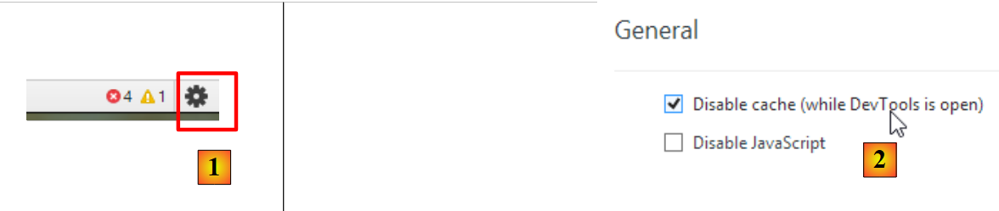 |
- Click the [1] icon in the bottom-right corner of the developer console;
- then check the option [2] that disables the cache in developer mode.
9.9.2. Using a partial view to display the form
The input form is one of the fragments displayed by the application. Currently, this form is displayed by the [Index.cshtml] view, which is a full view:
@{
ViewBag.Title = "Pam";
}
<h2>Formulaire</h2>
This view is displayed by the [Index] action:
[HttpGet]
public ViewResult Index()
{
return View();
}
Line 4 above shows that a [View] is being displayed, not a [PartialView]. We need a partial view for the form, which will be a page fragment. We modify the [Index.cshtml] view as follows:
@{
ViewBag.Title = "Pam";
}
@Html.Partial("Formulaire")
Line 4: The form is no longer part of the [Index.cshtml] page. It is now housed in a partial view [Form.cshtml]:
 |
The code for [Form.cshtml] is simply as follows:
<h2>Formulaire</h2>
Make these changes and verify that you still get the following view when the application starts:

9.9.3. The Ajax call [runSimulation]
We are interested in the fragment displayed when the user clicks the [Run Simulation] link:
 |
- In [1], the user clicks the [Run simulation] link;
- in [2], the simulation appears below the form.
We update the partial view [Formulaire.cshtml] that displays the form as follows:
<h2>Formulaire</h2>
<div id="simulation" />
Line 3: We create a region with the ID [simulation] to hold the simulation fragment.
We create the following partial view [Simulation.cshtml]:
 |
The content of the [Simulation.cshtml] view is as follows:
<hr />
<h2>Simulation</h2>
We now need to write the JavaScript code that handles the click on the [Run Simulation] link. We will follow the procedure outlined in Section 7.6.5. First, let’s look at the HTML code for the link in [_Layout.cshtml]:
<a id="lnkFaireSimulation" href="javascript:faireSimulation()">| Faire la simulation<br />
</a>
We can see that clicking the [Run Simulation] link will trigger the execution of the JS function [runSimulation]. This function will be written in the [myScripts.js] file, along with the other JS functions required by the application:
// global variables
var loading;
var content;
function faireSimulation() {
// make a manual Ajax call
...
}
function effacerSimulation() {
// delete form entries
...
}
function enregistrerSimulation() {
// make a manual Ajax call
...
}
function voirSimulations() {
// make a manual Ajax call
...
}
function retourFormulaire() {
// make a manual Ajax call
...
}
function terminerSession() {
...
}
// document loading
$(document).ready(function () {
// retrieve the references of the page's various components
loading = $("#loading");
content = $("#content");
});
- lines 35–39: the jQuery function executed when the application starts;
- lines 37-38: initialize the global variables from lines 2 and 3.
Note that the elements with IDs [loading] and [content] are defined in the master page [_Layout.cshtml] (lines 14 and 21 below):
<!DOCTYPE html>
<html>
<head>
...
</head>
<body>
<table>
<tbody>
<tr>
<td>
<h2>Simulateur de calcul de paie</h2>
</td>
<td style="width: 20px">
<img id="loading" style="display: none" src="~/Content/images/indicator.gif" />
</td>
...
</td>
</tbody>
</table>
<hr />
<div id="content">
@RenderBody()
</div>
</body>
</html>
Assignment: Following the procedure outlined in Section 7.6.5, write the JS function [faireSimulation]. This function will send a POST-type Ajax request to the action [/Pam/FaireSimulation]. No data will be posted at this time. The action [/Pam/FaireSimulation] will return the partial view [Simulation.cshtml] to the JS function [faireSimulation], which will then place this HTML output in the region with the id [simulation] of the form.
Test the [Run Simulation] link in your application.
9.9.4. The Ajax call [enregistrerSimulation]
The [Save Simulation] link is defined as follows in [_Layout.cshtml]:
<a id="lnkEnregistrerSimulation" href="javascript:enregistrerSimulation()">| Enregistrer la simulation<br />
</a>
Task: Following the previous steps, write the JS function [enregistrerSimulation]. This function will send a POST-type Ajax call to the action [/Pam/EnregistrerSimulation]. No data will be posted at this time. The [/Pam/EnregistrerSimulation] action will return the partial view [Simulations.cshtml] to the JS function [enregistrerSimulation], which will then place this HTML stream in the region with id [content] on the master page.
The [Simulations.cshtml] view is as follows:
 |
Its content is as follows:
<h2>Simulations</h2>
Here is an example of execution:

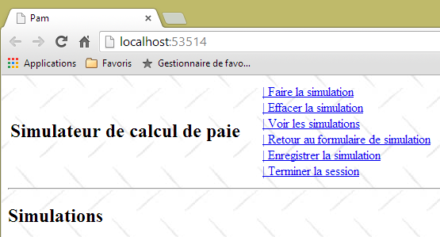
9.9.5. The Ajax call [viewSimulations]
The link [View simulations] is defined as follows in [_Layout.cshtml]:
<a id="lnkVoirSimulations" href="javascript:voirSimulations()">| Voir les simulations<br />
</a>
Task: Following the previous procedure, write the JS function [viewSimulations]. This function will send a POST-type Ajax call to the action [/Pam/ViewSimulations]. No data will be posted for now. The action [/Pam/VoirSimulations] will return the partial view [Simulations.cshtml] to the JS function [voirSimulations], which will then place this HTML output in the region with id [content] on the master page.
The view [Simulations.cshtml] is the one already used in the previous question.
Here is an example of execution:
 |
9.9.6. The Ajax call [returnToForm]
The link [Back to simulation form] is defined as follows in [_Layout.cshtml]:
<a id="lnkRetourFormulaire" href="javascript:retourFormulaire()">| Retour au formulaire de simulation<br />
</a>
Task: Following the previous steps, write the JS function [returnForm]. This function will send a POST-type Ajax request to the action [/Pam/Form]. No data will be submitted at this time. The [/Pam/Formulaire] action will return the partial view [Formulaire.cshtml] to the JS function [retourFormulaire], which will then place this HTML stream in the region with the id [content] on the master page.
The [Formulaire.cshtml] view has already been defined. Here is an example of execution:
 |
9.9.7. The Ajax call [endSession]
The [End Session] link is defined as follows in [_Layout.cshtml]:
<a id="lnkTerminerSession" href="javascript:terminerSession()">| Terminer la session<br />
</a>
Task: Following the previous procedure, write the JS function [terminerSession]. This function will send a POST-type Ajax call to the action [/Pam/TerminerSession]. No data will be posted for now. The [/Pam/TerminerSession] action will return the partial view [Formulaire.cshtml] to the JS function [terminerSession], which will then place this HTML stream in the region with the id [content] on the master page.
Here is an example of execution:
 |
9.9.8. The JS function [clearSimulation]
The [Clear Simulation] link is defined as follows in [_Layout.cshtml]:
<a id="lnkEffacerSimulation" href="javascript:effacerSimulation()">| Effacer la simulation<br />
</a>
The purpose of the JS function [clearSimulation] is:
- to hide the [Simulation] fragment if it exists;
- to reset the form input fields to their state upon the application’s initial load (when there are input fields—for now, there aren’t any).
Task: Write the JS function [clearSimulation]. There is no Ajax call here. This process occurs within the browser and does not involve the server.
Here is an example of execution:
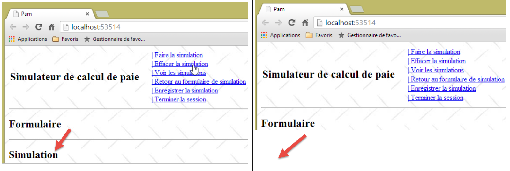 |
9.9.9. Managing navigation between screens
For now, the links are always displayed. We will now manage their display using a JavaScript function. First, let’s review the code for the six JavaScript links in [_Layout.cshtml]:
<a id="lnkFaireSimulation" href="javascript:faireSimulation()">| Faire la simulation<br />
</a>
<a id="lnkEffacerSimulation" href="javascript:effacerSimulation()">| Effacer la simulation<br />
</a>
<a id="lnkVoirSimulations" href="javascript:voirSimulations()">| Voir les simulations<br />
</a>
<a id="lnkRetourFormulaire" href="javascript:retourFormulaire()">| Retour au formulaire de simulation<br />
</a>
<a id="lnkEnregistrerSimulation" href="javascript:enregistrerSimulation()">| Enregistrer la simulation<br />
</a>
<a id="lnkTerminerSession" href="javascript:terminerSession()">| Terminer la session<br />
</a>
All links have an [id] attribute that will allow us to manage them in JavaScript. We modify the JavaScript method executed when the page loads as follows:
// variables globales
var loading;
var content;
var lnkFaireSimulation;
var lnkEffacerSimulation
var lnkEnregistrerSimulation;
var lnkTerminerSession;
var lnkVoirSimulations;
var lnkRetourFormulaire;
var options;
...
// au chargement du document
$(document).ready(function () {
// on récupère les références des différents composants de la page
loading = $("#loading");
content = $("#content");
// les liens du menu
lnkFaireSimulation = $("#lnkFaireSimulation");
lnkEffacerSimulation = $("#lnkEffacerSimulation");
lnkEnregistrerSimulation = $("#lnkEnregistrerSimulation");
lnkVoirSimulations = $("#lnkVoirSimulations");
lnkTerminerSession = $("#lnkTerminerSession");
lnkRetourFormulaire = $("#lnkRetourFormulaire");
// on les met dans un tableau
options = [lnkFaireSimulation, lnkEffacerSimulation, lnkEnregistrerSimulation, lnkVoirSimulations, lnkTerminerSession, lnkRetourFormulaire];
// on cache certains éléments de la page
loading.hide();
// on fixe le menu
setMenu([lnkFaireSimulation, lnkVoirSimulations, lnkTerminerSession]);
});
- lines 19–24: retrieve the references for the six links. These references are defined as global variables on lines 4–9;
- line 26: the [options] array is initialized with the six references. This array is defined as a global variable on line 10;
- line 28: hide the animated image indicating that Ajax calls are pending;
- line 30: the links [lnkFaireSimulation, lnkVoirSimulations, lnkTerminerSession] are displayed. The others will be hidden.
The JS function [setMenu] is as follows:
function setMenu(show) {
// display table links [show]
...
}
Task: Write the JS function [setMenu].
If T is an array of links:
- T.length is the number of links;
- T[i] is link number i;
- T[i].show() displays link number i;
- T[i].hide() hides link number i.
With these new JS functions, the page displayed at startup is as follows:

Adapt the JS functions [runSimulation, clearSimulation, saveSimulation, viewSimulations, returnToForm, endSession] to display the following screens:


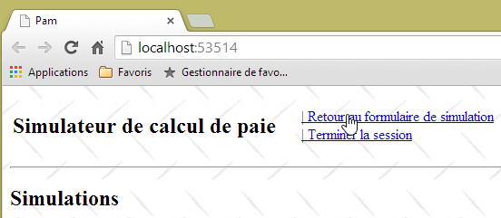

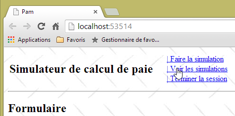
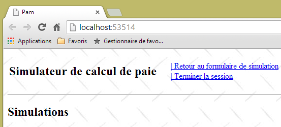


Now that the APU model and navigation links are in place, we can move on to writing the server-side actions and views. As you progress through the steps, you will find that some of the Ajax links that currently work will no longer function, because you will be modifying the partial views sent to the client. As you build the various server-side actions and views, the client-side Ajax links will resume functioning as intended.
9.10. Step 4: Writing the [Index] Server Action
Currently, when the application starts, we see the following screen:
Instead of this screen, we would like to see the following:

It is the [Index] action that must generate this page. Let’s make a few observations:
- The page displays a form with three input fields:
- the employee whose salary is being calculated,
- the number of hours worked,
- the number of days worked;
- the form is submitted via the [Run Simulation] link;
- the validity of the [Hours worked] and [Days worked] input fields must be verified;
- the list of employees comes from the [business] layer we built previously.
Let’s review the current code for the [Index] action:
[HttpGet]
public ViewResult Index()
{
return View();
}
the one from the [Index.cshtml] view that this action displays:
@{
ViewBag.Title = "Pam";
}
@Html.Partial("Formulaire")
and the partial view [Formulaire.cshtml]:
<h2>Formulaire</h2>
Changes will be made in these three locations.
9.10.1. The form template
Let’s return to the URL processing flow [/Pam/Index]:
 |
- the client’s HTTP request arrives at [1];
- at [2], the information contained in the request is converted into an action model [3] that serves as input for the action [4];
- at [4], the action, based on this model, will generate a response. This response will have two components: a view V [6] and the model M of this view [5];
- the view V [6] will use its model M [5] to generate the HTTP response for the client.
The action we are interested in is the [Index] action, which currently looks like this:
[HttpGet]
public ViewResult Index()
{
return View();
}
The [Index] action does not pass any model to the [Index.cshtml] view. Therefore, it will not be able to display the list of employees. This list can be requested from the [business] layer. To do this, the [pam-web-01] project must have a reference to the [pam-metier-simule] project. We will create this reference now:
 |
- in [1], right-click [References] in the [pam-web-01] project, then select [Add Reference];
- in [2], select the [Solution] option, then the [pam-metier-simule] project in [3];
- in [4], the [pam-metier-simule] project has been added to the references of the [pam-web-01] project.
9.10.2. The Application Model
We introduced the important concepts of the application model and the session model in Section 4.10, on page70 . We will now use them. Recall that we place in the model:
- an application model containing read-only data for all users. This model constitutes a shared memory for all requests from all users;
- session data that is read-write for a given user. This model constitutes a shared memory for all requests from that user.
What will we include in the application model? Let’s revisit its architecture:
 |
The [web] layer holds a reference to the [business] layer. This can be shared by all users. We can therefore place it in the application model. Furthermore, we will assume that the list of employees does not change. It can therefore be read once and then shared among all users. We therefore propose the following application model:
 |
The code for the [ApplicationModel] class could be as follows:
using Pam.Metier.Entites;
using Pam.Metier.Service;
namespace PamWeb.Models
{
public class ApplicationModel
{
// --- application scope data ---
public Employe[] Employes { get; set; }
public IPamMetier PamMetier { get; set; }
}
}
To display a drop-down list in a view, you write something like the following:
<!-- the drop-down list -->
<tr>
<td>Liste déroulante</td>
<td>@Html.DropDownListFor(m => m.DropDownListField,
new SelectList(@Model.DropDownListFieldItems, "Value", "Label"))
</td>
</tr>
The [DropDownListFor] method expects a SelectListItem[] type as its second parameter, which was provided above by a [SelectList] type. We need to construct such an array with the list of employees. Since the employees do not change, this array can also be placed in the application model. We update it as follows:
using Pam.Metier.Entites;
using Pam.Metier.Service;
using System.Web.Mvc;
namespace Pam.Web.Models
{
public class ApplicationModel
{
// --- application scope data ---
public Employe[] Employes { get; set; }
public IPamMetier PamMetier { get; set; }
public SelectListItem[] EmployesItems { get; set; }
}
}
When should this model be constructed? We demonstrated this in Section 4.10. It occurs when the [Application_Start] method in the [Global.asax] file is executed:
 |
The [Application_Start] method is currently as follows:
using System.Web.Http;
using System.Web.Mvc;
using System.Web.Optimization;
using System.Web.Routing;
namespace pam_web_01
{
public class MvcApplication : System.Web.HttpApplication
{
protected void Application_Start()
{
AreaRegistration.RegisterAllAreas();
WebApiConfig.Register(GlobalConfiguration.Configuration);
FilterConfig.RegisterGlobalFilters(GlobalFilters.Filters);
RouteConfig.RegisterRoutes(RouteTable.Routes);
BundleConfig.RegisterBundles(BundleTable.Bundles);
}
}
}
We extend it as follows:
using Pam.Metier.Entites;
using Pam.Metier.Service;
using PamWeb.Infrastructure;
using PamWeb.Models;
using System.Web.Http;
using System.Web.Mvc;
using System.Web.Optimization;
using System.Web.Routing;
namespace pam_web_01
{
public class MvcApplication : System.Web.HttpApplication
{
protected void Application_Start()
{
// ----------Auto-generated
AreaRegistration.RegisterAllAreas();
WebApiConfig.Register(GlobalConfiguration.Configuration);
FilterConfig.RegisterGlobalFilters(GlobalFilters.Filters);
RouteConfig.RegisterRoutes(RouteTable.Routes);
BundleConfig.RegisterBundles(BundleTable.Bundles);
// -------------------------------------------------------------------
// ---------- specific configuration
// -------------------------------------------------------------------
// application scope data
ApplicationModel application = new ApplicationModel();
Application["data"] = application;
// instantiation layer [business]
application.PamMetier = ...
// employee roster
application.Employes = ...
// employee combo items
application.EmployesItems = ...
// model binder for [ApplicationModel]
...
}
}
}
Task: Complete the code for the [Application_Start] method. Everything you need is in section 4.10. Take the time to reread this long but important section.
Line 33 actually consists of several lines. To create an object of type [SelectListItem], you can use the following method:
new SelectListItem() { Text = unTexte, Value = uneValeur };
This [SelectListItem] will be used to generate the following HTML tag: <option>
in the drop-down list. We will ensure that:
- text is the employee’s first name followed by their last name;
- aValue is the employee’s social security number.
Line 35, above, you will need the [ApplicationModelBinder] class described in section 4.10, page74 :
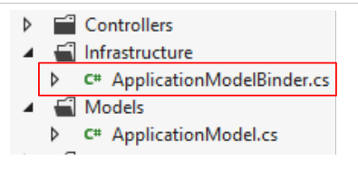 |
9.10.3. The code for the [Index] action
Now that we have defined a model for the application, we can update the code for the [Index] action as follows:
[HttpGet]
public ViewResult Index(ApplicationModel application)
{
return View();
}
- Line 4: The application model is now a parameter of the [Index] action. We explained in Section 4.10 how this parameter is initialized by the framework.
9.10.4. The [Index.cshtml] view template
Now, the [Index] action has access to the employees stored in the application model. It must now pass them to the [Index.cshtml] view, which it will display. We could pass a [ApplicationModel] type as the view model to the [Index.cshtml] view , but we’ll quickly see that this view needs additional information that isn’t in [ApplicationModel]. We’ll use the following [IndexModel] view model:
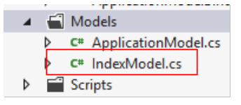 |
namespace Pam.Web.Models
{
public class IndexModel
{
// application scope data
public ApplicationModel Application { get; set; }
}
}
- Line 6: [IndexModel] contains the application model.
The [Index] action becomes the following:
[HttpGet]
public ViewResult Index(ApplicationModel application)
{
return View(new IndexModel() { Application = application });
}
- line 4, the default view [Index.cshtml] is displayed using an [IndexModel] type as the model, initialized with data from the application model.
We know that the [Index.cshtml] view must display a form:
Let’s return to the request handling flow:
 |
For the [GET /Pam/Index] request:
- the action is [Index];
- the model for this action is [ApplicationModel];
- the view is [Index.cshtml];
- the model for this view is [IndexModel].
When the form is submitted, the processing flow will be similar:
- the action is the one that handles the POST;
- its model collects the posted values, in this case:
- the social security number of the selected employee;
- the number of hours worked;
- the number of days worked;
We could create an action model that combines these three values. It is also common to reuse the model used to display the form. That is what we will do here. The [IndexModel] class evolves as follows:
using System.ComponentModel.DataAnnotations;
using System.Web.Mvc;
namespace Pam.Web.Models
{
[Bind(Exclude = "Application")]
public class IndexModel
{
// application scope data
public ApplicationModel Application { get; set; }
// posted values
[Display(Name = "Employé")]
public string SS { get; set; }
[Display(Name = "Heures travaillées")]
[UIHint("Decimal")]
public double HeuresTravaillées { get; set; }
[Display(Name = "Jours travaillés")]
public double JoursTravaillés { get; set; }
}
}
- lines 13, 16, 18: the three posted values. Note that [daysWorked] has been declared as type [double] even though an integer is actually expected. The [double] type was introduced to facilitate client-side validation of this field, as validating an [int] type had caused issues;
- lines 12, 14, 17: labels for the [Html.LabelFor] methods of the view associated with the model;
- line 15: an annotation to display the [HoursWorked] field with two decimal places;
- line 5: specifies that the property named [Application] is not included in the posted values.
9.10.5. The [Index.cshtml] and [Formulaire.cshtml] views
The [Index.cshtml] view is displayed by the following [Index] action:
[HttpGet]
public ViewResult Index(ApplicationModel application)
{
return View(new IndexModel() { Application = application });
}
Interestingly, the [Index.cshtml] view remains unchanged:
@{
ViewBag.Title = "Pam";
}
@Html.Partial("Formulaire")
- the view does not declare any model;
- line 4: it includes the partial view [Form.cshtml], again without passing a model to it. During testing, it was observed that the [IndexModel] model passed to the [Index.cshtml] view was implicitly propagated to the [Form.cshtml] partial view. The latter view could now take the following form:
@model Pam.Web.Models.IndexModel
@using (Html.BeginForm("FaireSimulation", "Pam", FormMethod.Post, new { id = "formulaire" }))
{
<table>
<thead>
<tr>
...
</tr>
</thead>
<tbody>
<tr>
...
</tr>
<tr>
...
</tr>
</tbody>
</table>
}
<div id="simulation" />
- line 1: the view receives a model of type [IndexModel];
- line 3: the form;
- lines 6–10: the headers of the input table;
- lines 12–14: the input row;
- lines 15–17: any error messages.
Task: Complete the code for the [Formulaire.cshtml] view. Use the [DropDownListFor, EditorFor, LabelFor, ValidationMessageFor] methods described in Section 5.7.
9.10.6. Testing the [Index] action
We have written all the elements of the URL processing chain [/Pam/Index]:
 |
We test the application with [Ctrl-F5]:

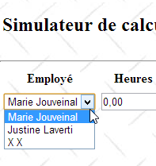
You must verify that your drop-down list has been populated with the list of employees we defined in the simulated [business] layer.
9.11. Step 5: Implementing input validation
9.11.1. The Problem
Although we haven’t done anything to enable it, client-side validation is already in effect:


Client-side validation is enabled by default due to line 3 below in the application’s [Web.config] file.
<appSettings>
...
<add key="ClientValidationEnabled" value="true" />
</appSettings>
However, because in [IndexModel], we declared the [JoursTravaillés] field as type [double]:
public double JoursTravaillés { get; set; }
we can enter a real number in this field:

Furthermore, we can enter arbitrary values in both fields:
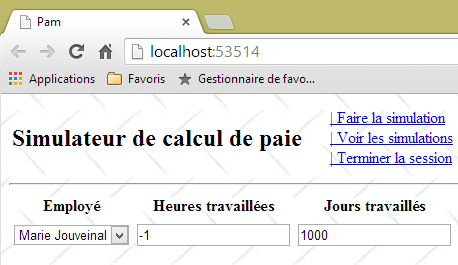
The form's [IndexModel] is currently as follows:
using System.ComponentModel.DataAnnotations;
using System.Web.Mvc;
namespace Pam.Web.Models
{
[Bind(Exclude = "Application")]
public class IndexModel
{
// application scope data
public ApplicationModel Application { get; set; }
// posted values
[Display(Name = "Employé")]
public string SS { get; set; }
[Display(Name = "Heures travaillées")]
[UIHint("Decimal")]
public double HeuresTravaillées { get; set; }
[Display(Name = "Jours travaillés")]
public double JoursTravaillés { get; set; }
}
}
Task: Improve this model to:
- display custom error messages;
- accept only real values in the range [0,400] for the [HoursWorked] field;
- accept only integer values in the range [0,31] for the [DaysWorked] field;
You can refer to the example in Section 7.6.2. To verify that the number of days worked is an integer, you can use a regular expression (see examples in Section 5.9.1).
Here are some examples of what is expected:
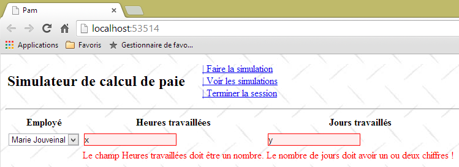


9.11.2. Entering real numbers in French format
In the current version of the application, the number of hours worked must be a decimal number in the Anglo-Saxon format (with a decimal point). The French format with a comma is not accepted:

This issue has been identified and addressed in Section 6.1.
Task: Following the procedure in the section mentioned above, make the necessary changes so that real numbers can be entered using the French decimal format. Test your application.
Now, the previous screen becomes:

9.11.3. Form validation via the JavaScript link [Run simulation]
Currently, invalid values can be submitted, as shown in the following sequence:

 |
The presence of the simulation in [1] and the menu change in [2] show that clicking the [Run simulation] link submitted the form even though the entered values were invalid. This issue was identified and addressed in section 7.6.5.
Task: Following the procedure outlined in the aforementioned section, ensure that the POST action for the [Run Simulation] link cannot be performed if the entered values are invalid. Remember to clear your browser cache before testing your changes.
Note that the partial view [Formulaire.cshtml] generates an HTML form with the id [formulaire] (line 1 below):
@using (Html.BeginForm("FaireSimulation", "Pam", FormMethod.Post, new { id = "formulaire" }))
{
...
}
This can be verified by viewing the form's source code in the browser:
<div id="content">
<form action="/Pam/FaireSimulation" id="formulaire" method="post">
...
</form>
<div id="simulation" />
</div>
9.12. Step 6: Run a simulation
9.12.1. The problem
When we run a simulation, we want to get the following result:
 |
The partial view [Simulation.cshtml] now displays an employee's pay stub.
9.12.2. Writing the [Simulation.cshtml] view
The [Simulation.cshtml] view changes as follows:
@model Pam.Metier.Entites.FeuilleSalaire
<hr />
<p><span class="info">Informations Employé</span></p>
<table>
<tbody>
<tr>
<td><span class="libellé">Nom</span>
</td>
<td><span class="libellé">Prénom</span>
</td>
<td><span class="libellé">Adresse</span>
</td>
</tr>
<tr>
<td>
<span class="valeur">@Model.Employe.Nom</span>
</td>
...
</tr>
<tr>
<td><span class="libellé">Ville</span>
</td>
<td><span class="libellé">Code Postal</span>
</td>
<td><span class="libellé">Indice</span>
</td>
</tr>
<tr>
...
</tr>
</tbody>
</table>
<br />
<p><span class="info">Informations Cotisations</span></p>
<table>
...
</tbody>
</table>
<br />
<p><span class="info">Informations Indemnités</span></p>
<table>
...
</table>
<br />
<p><span class="info">Informations Salaire</span></p>
<table>
...
</table>
<br />
<table>
...
</table>
- line 1: the [Simulation.cshtml] view is based on the [PayrollSheet] type defined in section 9.7.3;
- the view uses the [label, info, value] classes defined in the application's style sheet [Content / Site.css]:
.libellé {
background-color: azure;
margin: 5px;
padding: 5px;
}
.info {
background-color: antiquewhite;
margin: 5px;
padding: 5px;
}
.valeur {
background-color: beige;
padding: 5px;
margin: 5px;
}
Additionally, still in [Site.css], we set the row height of the various HTML tables in the region with the ID [simulation], specifically where the pay stub is displayed:
#simulation table tr {
height: 30px;
}
Task: Complete the [Simulation.cshtml] view.
To display the euro amount of a sum of money, we will use the [string.Format] method:
The above statement displays [somme] as a monetary value [C] (Currency) with two decimal places [C2].
To test this view, you must provide it with a pay stub. This must be provided by the [/Pam/FaireSimulation] action, which is the target of the Ajax call from the [Run Simulation] link. Currently, this action is as follows:
[HttpGet]
public ViewResult Index(ApplicationModel application)
{
return View(new IndexModel() { Application = application });
}
// make a simulation
[HttpPost]
public PartialViewResult FaireSimulation()
{
return PartialView("Simulation");
}
In the code above, the [FaireSimulation] action does not pass any model to the [Simulation.cshtml] view. It needs to pass a pay stub to it. We know that the [business] layer calculates the pay stubs. This [business] layer is accessible via the application model [ApplicationModel] that we defined in section 9.10.2:
public class ApplicationModel
{
// --- application scope data ---
public Employe[] Employes { get; set; }
public IPamMetier PamMetier { get; set; }
public SelectListItem[] EmployesItems { get; set; }
}
The [business] layer is accessible via the property on line 5 above. To give the [RunSimulation] action access to the [business] layer, we will pass it the application model as we did for the [Index] action. The code then evolves as follows:
// make a simulation
[HttpPost]
public PartialViewResult FaireSimulation(ApplicationModel application)
{
return PartialView("Simulation");
}
Now, within the action, we are able to calculate a fictitious pay stub. The code evolves as follows:
// make a simulation
[HttpPost]
public PartialViewResult FaireSimulation(ApplicationModel application)
{
FeuilleSalaire feuilleSalaire = application.PamMetier.GetSalaire("254104940426058", 150, 20);
return PartialView("Simulation", feuilleSalaire);
}
- In line 5, a fictitious salary is calculated. The first parameter is an existing social security number. It was defined in the [business] class simulated in section 9.7.5. The second parameter is the number of hours worked, and the third is the number of days worked;
- Line 6: This pay stub is passed as a template to the [Simulation.cshtml] view.
We are now ready to test the [Simulation.cshtml] view:

We enter no data and request the simulation. We then obtain the following result:

9.12.3. Calculation of actual pay
Our current [RunSimulation] action always calculates the same pay slip:
// make a simulation
[HttpPost]
public PartialViewResult FaireSimulation(ApplicationModel application)
{
FeuilleSalaire feuilleSalaire = application.PamMetier.GetSalaire("254104940426058", 150, 20);
return PartialView("Simulation", feuilleSalaire);
}
It does not take into account the entered information:
- the employee whose salary is being calculated;
- the number of hours worked;
- the number of days worked.
The entered values are passed to the [RunSimulation] action as follows:
- the user clicks the [Run Simulation] link. This triggers the execution of the JS function [runSimulation] that we have already written;
- the JS function [faireSimulation] then makes an Ajax call to the server action [/Pam/FaireSimulation] that we are currently working on. For now, the JS function [faireSimulation] does not send any information to the server action. It will need to send it the values entered by the user;
- the server action [/Pam/FaireSimulation] will retrieve the entered values from the data posted by the JS function [faireSimulation].
Let’s start with point 2: the JS function [faireSimulation] must post the values entered by the user to the server action [/Pam/FaireSimulation].
Task: Complete the JS function [faireSimulation] so that it posts the values entered by the user. You can refer to the example in section 7.6.5, where this issue was addressed.
Now let’s address point 3 above. The server action [/Pam/FaireSimulation] must retrieve the values posted by the JS function [faireSimulation].
Task: Complete the server method [FaireSimulation] so that it calculates the salary using the values posted by the JS function [faireSimulation]. You can again refer to the example in Section 7.6.5, where this problem was addressed. For now, we will assume that the model derived from the posted values is always valid.
Hint: The server action [FaireSimulation] evolves as follows:
// make a simulation
[HttpPost]
public PartialViewResult FaireSimulation(ApplicationModel application, FormCollection data)
{
// action model creation
...
// we try to retrieve the values posted in this model
...
// salary calculation
FeuilleSalaire feuilleSalaire = ...
// the salary sheet is displayed
return PartialView("Simulation", feuilleSalaire);
}
Here is an example of execution:
 |
We select [Justine Laverti]. We then get the following result:
 |
We have indeed obtained the fictitious pay stub for [Justine Laverti]. Previously, the only pay stub that was calculated was that of [Marie Jouveinal]. So the value posted for the employee selection was used. As for the number of hours and the number of days, we cannot say anything since our simulated [business] layer does not take them into account.
9.12.4. Error Handling
Let’s look at the following example:
 |
- in [1], we select an employee who does not exist (see the definition of the simulated [business] layer in section 9.7.5;
- in [2], we run the simulation;
- in [3] below, an error page is returned.
 |
What happened?
The JS function [doSimulation] was executed. Its code looks like this:
function faireSimulation() {
...
// make a manual Ajax call
$.ajax({
url: '/Pam/FaireSimulation',
...
beforeSend: function () {
// wait signal on
loading.show();
},
success: function (data) {
...
},
error: function (jqXHR) {
// error display
simulation.html(jqXHR.responseText);
simulation.show();
},
complete: function () {
// wait signal off
loading.hide();
}
});
// menu
setMenu([lnkEffacerSimulation, lnkEnregistrerSimulation, lnkTerminerSession, lnkVoirSimulations]);
}
The Ajax call failed, and the function in lines 14–18 was executed. The error page [jqXHR.responseText] returned by the server was displayed. This is quite specific. The simulated [business] layer threw an exception because the SSN provided to it does not belong to an existing employee (see the code for the simulated [business] layer in section 9.7.5). We need to handle this case properly.
We will create a partial view [Errors.chtml] that will be returned to the JavaScript client whenever an error is detected on the server side:
 |
The code for the partial view [Errors.chtml] is as follows:
@model IEnumerable<string>
<hr />
<h2>Les erreurs suivantes se sont produites</h2>
<ul>
@foreach (string msg in Model)
{
<li>@msg</li>
}
</ul>
- line 1: the view receives a list of error messages as a model;
- lines 5–10: which are displayed in an HTML list;
Now, let's modify the code for the server action [FaireSimulation] as follows:
// make a simulation
[HttpPost]
public PartialViewResult FaireSimulation(ApplicationModel application, FormCollection data)
{
...
// salary calculation
FeuilleSalaire feuilleSalaire = null;
Exception exception=null;
try
{
// salary calculation
feuilleSalaire = ...
}
catch (Exception ex)
{
exception = ex;
}
// mistake?
if (exception == null)
{
// the salary sheet is displayed
return PartialView("Simulation", feuilleSalaire);
}
else
{
// the error page is displayed
return PartialView("Erreurs", Static.GetErreursForException(exception));
}
}
- lines 9–17: salary calculation is now performed within a try/catch block;
- line 27: if an error occurred, the partial view [Errors.cshtml] is displayed, using the list of error messages provided by the static method [Static.GetErrorsForException(exception)] as a template.
We group two static utility functions [1] in the [Static] class:
 |
using System;
using System.Collections.Generic;
using System.Web.Mvc;
namespace PamWeb.Infrastructure
{
public class Static
{
// list of exception error messages
public static List<string> GetErreursForException(Exception ex)
{
List<string> erreurs = new List<string>();
while (ex != null)
{
erreurs.Add(ex.Message);
ex = ex.InnerException;
}
return erreurs;
}
// list of error messages linked to an invalid model
public static List<string> GetErreursForModel(ModelStateDictionary état)
{
List<string> erreurs = new List<string>();
if (!état.IsValid)
{
foreach (ModelState modelState in état.Values)
{
foreach (ModelError error in modelState.Errors)
{
erreurs.Add(getErrorMessageFor(error));
}
}
}
return erreurs;
}
// the error message linked to an element of the action model
static private string getErrorMessageFor(ModelError error)
{
if (error.ErrorMessage != null && error.ErrorMessage.Trim() != string.Empty)
{
return error.ErrorMessage;
}
if (error.Exception != null && error.Exception.InnerException == null && error.Exception.Message != string.Empty)
{
return error.Exception.Message;
}
if (error.Exception != null && error.Exception.InnerException != null && error.Exception.InnerException.Message != string.Empty)
{
return error.Exception.InnerException.Message;
}
return string.Empty;
}
}
}
- lines 10–19: the static function [GetErrorsForException] returns the list of errors in an exception stack;
- lines 22–36: the static function [GetErrorsForModel] returns the list of errors for an invalid action model. The code for this function, as well as that for the private method [getErrorMessageFor] (lines 39–54), has already been encountered previously.
With that done, we can test the error case again:
 |
- in [1], we select the employee who does not exist;
- in [2], we run the simulation;
- in [3], we retrieve the new error page.
Let’s return to the server action [RunSimulation]:
// make a simulation
[HttpPost]
public PartialViewResult FaireSimulation(ApplicationModel application, FormCollection data)
{
// action model creation
IndexModel modèle = new IndexModel() { Application = application};
// we try to retrieve the values posted in the model
TryUpdateModel(modèle, data);
// salary calculation
...
}
On line 8, we update the model from line 6 with the values posted by the Ajax call. We do not validate the model. We need to do this because we cannot know where the posted values come from. Someone could have tampered with a POST request and sent us invalid data.
Task: Following the pattern we developed for the exception case, modify the server action [FaireSimulation] to return an error page when the posted data is invalid. To do this, we will use the static method [GetErreursForModel] from the [Static] class.
How do you test this change? In Section 9.11.3, you ensured that the JS function [faireSimulation] would not POST the entered values if they were invalid. Comment out the lines that do this, then perform the following test:
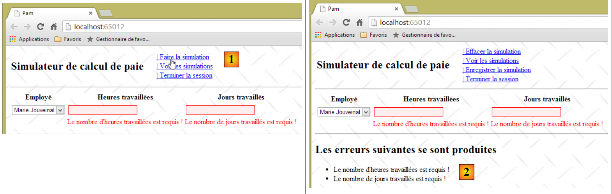 |
- in [1], run the simulation with invalid values;
- in [2], we successfully retrieve the error page we just built, proving that the server-side validators worked correctly.
Next, remember to uncomment the lines you just commented out in the JS function [faireSimulation].
9.13. Step 7: Setting up a user session
The [Payroll Calculator] application allows the user to perform various payroll simulations using the [Run Simulation] link, save them using the [Save Simulation] link, view them using the [View Simulations] link, and delete them using the [Delete Simulation] link. We know that between two successive user requests, there is no state unless we create one via the session mechanism (see Section 4.10). It is quite clear here that we must store in the session the list of simulations saved by the user over time. There is other data to store: when the user performs a simulation, it is only saved in the list of simulations if the user requests it via the [Save Simulation] link. When they do so, we must be able to retrieve the simulation calculated in the previous request. To do this, it will also be stored in the session. Finally, we will number the simulations starting from 1. To correctly number a new simulation, we must have retained the number of the previous simulation, again in the session.
In Section 4.10, we introduced the concept of a session model as an input parameter for an action so that the action can access the session. We will revisit this concept. You are encouraged to reread the relevant section if this concept is unclear to you.
We create the following [SessionModel] class:
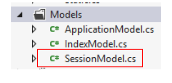 |
Its code is as follows:
using Pam.Web.Models;
using System.Collections.Generic;
namespace Pam.Web.Models
{
public class SessionModel
{
// list of simulations
public List<Simulation> Simulations { get; set; }
// n° of next simulation
public int NumNextSimulation { get; set; }
// the last simulation
public Simulation Simulation { get; set; }
// manufacturer
public SessionModel()
{
// empty simulation list
Simulations = new List<Simulation>();
// next simulation no
NumNextSimulation = 1;
}
}
}
The [Simulation] class in lines 9 and 13 will store information about a simulation. What do we need to store? The [Run Simulation] link calculates a [Payroll]-type payroll sheet. It seems natural to include this in the simulation. Additionally, we need to store the information that led to this payroll sheet:
- the selected employee. This can be found in the [PayrollSheet.Employee] field. Therefore, there is no need to store it a second time;
- the number of hours and days worked. This information is not included in the [Payroll] class. We therefore need to store it.
Finally, each simulation is identified by a number. We could therefore start with the following [Simulation] class:
using Pam.Metier.Entites;
namespace Pam.Web.Models
{
public class Simulation
{
// simulation no
public int Num { get; set; }
// number of hours worked
public double HeuresTravaillées { get; set; }
// number of days worked
public int JoursTravaillés { get; set; }
// payslip
public FeuilleSalaire FeuilleSalaire { get; set; }
}
}
The server action [RunSimulation] must, in addition to calculating a payroll, create a simulation and place it in the session. To do this, it will receive the session model as a parameter:
// make a simulation
[HttpPost]
public PartialViewResult FaireSimulation(ApplicationModel application, SessionModel session, FormCollection data)
{
// action model creation
IndexModel modèle = new IndexModel() { Application = application };
// we try to retrieve the values posted in the model
TryUpdateModel(modèle, data);
// valid model?
if (!ModelState.IsValid)
{
// the error page is displayed
return PartialView("Erreurs", Static.GetErreursForModel(ModelState));
}
// salary calculation
FeuilleSalaire feuilleSalaire = null;
Exception exception = null;
try
{
// salary calculation
feuilleSalaire = application.PamMetier.GetSalaire(modèle.SS, modèle.HeuresTravaillées, (int)modèle.JoursTravaillés);
}
catch (Exception ex)
{
exception = ex;
}
// mistake?
if (exception != null)
{
// the error page is displayed
return PartialView("Erreurs", Static.GetErreursForException(exception));
}
// create a simulation and place it in the session
session.Simulation = ...
// the salary sheet is displayed
return PartialView("Simulation", feuilleSalaire);
}
- line 3: the action receives the session model as a parameter;
Task 1: Complete the action code, line 34
Task 2: Following the procedure in Section 4.10, do what is necessary to ensure that the action’s [SessionModel session] parameter is properly initialized by the framework. If nothing is done, this parameter will have a null pointer.
9.14. Step 8: Save a simulation
9.14.1. The Problem
When we have performed a simulation, we can save it:
 |

The partial view [Simulations.cshtml] now displays the list of simulations performed by the user. Note that the calculated pay stub is fictitious.
9.14.2. Writing the server action [SaveSimulation]
The Ajax link [Save Simulation] calls the server action [SaveSimulation], whose code was previously as follows:
[HttpPost]
public PartialViewResult EnregistrerSimulation()
{
return PartialView("Simulations");
}
It evolves as follows:
// save a simulation
[HttpPost]
public PartialViewResult EnregistrerSimulation(SessionModel session)
{
// save the last simulation run in the session's simulation list
...
// increment the number of the next simulation in the session
...
// the list of simulations is displayed
...
}
- Line 1: The [SaveSimulation] action needs access to the session. That is why it takes the session model as a parameter.
Task: Complete the server action [SaveSimulation].
9.14.3. Writing the partial view [Simulations.cshtml]
The previous action [SaveSimulation] displays the partial view [Simulations.cshtml] with the list of simulations performed by the user as its model. Its code is as follows:
@model IEnumerable<Simulation>
@using Pam.Web.Models
@if (Model.Count() == 0)
{
<h2>Votre liste de simulations est vide</h2>
}
@if (Model.Count() != 0)
{
<h2>Liste des simulations</h2>
...
}
Assignment 1: Complete the code for the partial view [Simulations.cshtml]. Use an HTML table to display the simulations. You may refer to the examples in Section 5.4.
Note: The [remove] link for each simulation in the HTML table will be a JavaScript link in the following format:
where N is the simulation number.
Task 2: Test your application by running simulations. To do this, repeat the following sequence: 1) reload the application page by pressing [F5], 2) run a simulation, 3) save it. The simulations will accumulate in the session, which should be reflected in the [Simulations.cshtml] view.
Task 3: Improve the partial view [Simulations.cshtml] so that the colors of the rows in the HTML table alternate.

Alternately assign the CSS classes [even] and [odd], defined in the stylesheet [/Content/Site.css], to the <tr> rows of the HTML table:
.impair {
background-color: beige;
}
.pair {
background-color: lightsteelblue;
}
9.15. Step 9: Return to the input form
9.15.1. The problem
Once we have obtained the list of simulations, we can return to the input form, which we haven’t been able to do for a while:


9.15.2. Writing the server action [Form]
The Ajax link [Return to simulation form] calls the server action [Form], whose code was previously as follows:
[HttpPost]
public PartialViewResult Formulaire()
{
return PartialView("Formulaire");
}
The [Form] partial view it displays expects an [IndexModel] (line 1 below):
@model Pam.Web.Models.IndexModel
@using (Html.BeginForm("FaireSimulation", "Pam", FormMethod.Post, new { id = "formulaire" }))
{
...
}
<div id="simulation" />
This is why the [Back to simulation form] link was no longer working.
Task: Write the new version of the [Form] server action (2 lines to rewrite), then run the tests.
9.15.3. Modifying the JavaScript function [returnToForm]
With the change made earlier, we can now return to the form, but an issue then arises:
 |
- In [1], we return to the input form;
- in [2], we perform a simulation with incorrect entries. We then discover that the client-side validators no longer work. Here, the server was called and returned an error page thanks to the work done in section 9.12.4.
This issue was identified and addressed in Section 7.6.7.
Task: Following the procedure in Section 7.6.7, correct the JavaScript function [returnToForm] and then run tests to verify that the client-side validators are working again.
9.16. Step 10: See the list of simulations
9.16.1. The problem
When working with the simulation form, you can view the list of simulations you have performed:


9.16.2. Writing the server action [ViewSimulations]
The Ajax link [View Simulations] calls the server action [ViewSimulations], whose code was previously as follows:
// see simulations
[HttpPost]
public PartialViewResult VoirSimulations()
{
return PartialView("Simulations");
}
The [Simulations] partial view it displays expects an [IEnumerable<Simulation>] model (line 1 below):
@model IEnumerable<Simulation>
@using Pam.Web.Models
@if (Model.Count() == 0)
{
<h2>Votre liste de simulations est vide</h2>
}
@if (Model.Count() != 0)
{
<h2>Liste des simulations</h2>
...
}
This is why the [View simulations] link was no longer working.
Task: Write the new version of the server action [ViewSimulations] (2 lines to rewrite), then run the tests.
9.17. Step 11: End the session
9.17.1. The problem
You can end the user's session at any time using the [Ajax] [End Session] link. This ends the current session and starts a new one. Additionally, you return to the form view:
 |
 |
- in [1], we ran two simulations and then ended the session;
- in [2], we returned to the input form. We want to see the simulations;
- in [3], due to the session change, the list of simulations is now empty.
9.17.2. Writing the [EndSession] server action
The Ajax link [End Session] calls the server action [EndSession], whose code was previously as follows:
// end session
[HttpPost]
public PartialViewResult TerminerSession()
{
return PartialView("Formulaire");
}
The partial view [Form] it displays expects an [IndexModel] (line 1 below):
@model Pam.Web.Models.IndexModel
@using (Html.BeginForm("FaireSimulation", "Pam", FormMethod.Post, new { id = "formulaire" }))
{
...
}
<div id="simulation" />
This is why the [End Session] link was no longer working.
Task: Write the new version of the server action [EndSession] (2 lines to rewrite), then run the tests.
Note: To terminate the session in the action, write:
9.17.3. Modification of the JavaScript function [terminerSession]
With the modification made previously, we can now return to the form, but an anomaly then appears—the one described earlier in section 9.15.3.
Task: Following the procedure you used in section 9.15.3, correct the JavaScript function [terminerSession] and then run tests to verify that the client-side validators are working again.
9.18. Step 12: Clear the simulation
9.18.1. The problem
When a simulation has been created, it can be cleared using the JavaScript link [Clear Simulation]:

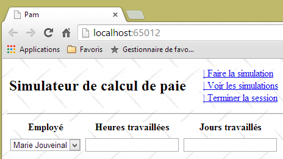
9.18.2. Writing the client-side action [clearSimulation]
The JavaScript function [clearSimulation] currently has the following code:
function effacerSimulation() {
// delete form entries
// ...
// hide the simulation if it exists
$("#simulation").hide();
// menu
setMenu([lnkFaireSimulation, lnkTerminerSession, lnkVoirSimulations]);
}
Task: Complete this code. You can use the example in section 7.6.6 as a guide
9.19. Step 13: Remove a simulation
9.19.1. The problem
When on the simulations page, you can delete certain simulations using the JavaScript link [remove]:


9.19.2. Writing the client action [removeSimulation]
The [remove] links have the following HTML format:
where N is the simulation number.
Task: Following the procedure in sections 9.9.3, write the JS function [removeSimulation]. This function will send a POST-type Ajax request to the action [/Pam/RemoveSimulation]. It will post the data N in the form num=N.
Note: The JS function [retirerSimulation] is similar to the other JS functions you have written that make an Ajax call to the server. The only difference here is the POST of a value that is not in a form. We know that the posted values are combined into a string in the following format:
The JS function [removeSimulation] will therefore have the following form:
function retirerSimulation(N) {
// make a manual Ajax call
$.ajax({
url: '/Pam/RetirerSimulation',
...
data:"num="+N,
...
});
// menu
setMenu([lnkRetourFormulaire, lnkTerminerSession]);
}
- Line 6: The [data] property of a jQuery Ajax call represents the string posted to the server.
9.19.3. Writing the server action [RemoveSimulation]
The server action [RemoveSimulation]:
- receives a posted parameter called [num], which is the number of a simulation;
- must remove the simulation with that number from the list of simulations stored in the session;
- must then display the new list of simulations.
Task: Write the server action [RemoveSimulation]. Review Section 4.1 to learn how to retrieve the posted parameter named [num].
9.20. Step 14: Improving the application initialization method
Our web application is complete. It is functional with a simulated [business] class. Let’s review the architecture we’ve developed:
 |
There are a few details left to sort out before moving on to the actual implementation of the [business] layer, and this takes place in the application initialization method: the [Application_Start] method in [Global.asax]:
 |
The [Application_Start] method in [Global.asax] is executed only once when the application starts. This is where the [Web.config] configuration file can be utilized. For now, our [Application_Start] method looks like this:
// application
protected void Application_Start()
{
// ----------Auto-generated
AreaRegistration.RegisterAllAreas();
WebApiConfig.Register(GlobalConfiguration.Configuration);
FilterConfig.RegisterGlobalFilters(GlobalFilters.Filters);
RouteConfig.RegisterRoutes(RouteTable.Routes);
BundleConfig.RegisterBundles(BundleTable.Bundles);
// -------------------------------------------------------------------
// ---------- specific configuration
// -------------------------------------------------------------------
// application scope data
ApplicationModel application = new ApplicationModel();
Application["data"] = application;
// instantiation layer [business]
application.PamMetier = new PamMetier();
...
// model binders
...
}
On line 17, the business layer is instantiated using the new operator. Additionally, the application model is defined as follows:
public class ApplicationModel
{
// --- application scope data ---
public Employe[] Employes { get; set; }
public IPamMetier PamMetier { get; set; }
public SelectListItem[] EmployesItems { get; set; }
}
In line 5 above, we see that the type of the [PamMetier] property is that of the [IPamMetier] interface. This means that this property can be initialized by any object implementing this interface. However, on line 17 of [Application_Start], we have hard-coded the name of a class that implements [IPamMetier]. Therefore, if the [business] layer were to be implemented with a new class that implements [IPamMetier], this line would need to be changed. This isn’t a major issue, but it can be avoided. The definition of the class implementing the [IPamMetier] interface can be moved to a configuration file. To change the implementation, we then modify the contents of this configuration file. The .NET code does not need to be changed.
Here, we will use the [Spring.net] dependency injection container. There are other .NET frameworks that can do the same thing, perhaps better and more simply.
The project architecture evolves as follows:
 |
- in [A], the initialization method of the [ASP.NET MVC] layer will request a reference to the simulated [business] layer from [Spring.net];
- in [B], [Spring.net] will create the simulated [business] layer by using its configuration file to determine which class to instantiate;
- in [C], [Spring.net] will return the reference to the simulated [business] layer to the [ASP.NET MVC] layer.
Note that by default, objects managed by [Spring.net] are singletons: there is only one instance of each. Thus, if later in our example, code requests a reference to the simulated [business] layer from [Spring.net] again, [Spring.net] simply returns the reference to the object initially created.
9.20.1. Adding [Spring] references to the web project
We will use [Spring.net]. This framework comes in the form of a DLL that must be added to the project’s references. Here’s how to do it:
 |
In [1], right-click on the [References] branch of the project and select the [Manage NuGet Packages] option. An internet connection is required. Then proceed as previously done for the JQuery [Globalize] library. Search for the keyword [Spring.core] and install this package. The installation includes two DLLs: [Spring.core] [2] and [Common.Logging] [3]. In the following examples, Spring version 1.3.2 was used.
Note: If you do not have an internet connection, you will find these DLLs in the [lib] folder of the materials for this case study.
9.20.2. Configuring [web.config]
The definition of the implementation class for the [IPamMetier] interface is defined in the [web.config] file.
<configuration>
<configSections>
...
<sectionGroup name="spring">
<section name="objects" type="Spring.Context.Support.DefaultSectionHandler, Spring.Core" />
<section name="context" type="Spring.Context.Support.ContextHandler, Spring.Core" />
</sectionGroup>
</configSections>
<!-- spring configuration -->
<spring>
<context>
<resource uri="config://spring/objects" />
</context>
<objects xmlns="http://www.springframework.net">
<object id="pammetier" type="Pam.Metier.Service.PamMetier, pam-metier-simule"/>
</objects>
</spring>
...
- lines 2–8: locate the <configSections> tag in the file and insert lines 4–7 inside it;
- line 4: the [name="spring"] attribute provides information about the [spring] section in lines 10-17;
- line 5: defines the class [Spring.Context.Support.DefaultSectionHandler] located in the [Spring.Core] DLL as the one capable of handling the [objects] section in lines 14–16;
- line 6: defines the class [Spring.Context.Support.ContextHandler] located in the [Spring.Core] DLL as the one capable of processing the [context] section in lines 11–13;
- lines 11–13: this section provides the information [<resource uri="config://spring/objects" />], which indicates that the Spring objects are located in the configuration file within the [/spring/objects] section, i.e., on lines 14–16;
- lines 14–16: the [objects] tag introduces the Spring objects;
- line 15: defines an object identified by [id="pammetier"], which is an instance of the class [Pam.Metier.Service.PamMetier] located in the DLL [pam-metier-simule]. Be careful not to make a mistake here. For the [id] attribute, you can use whatever you want. You will use this identifier in [Global.asax]. The class [Pam.Metier.Service.PamMetier] is that of our simulated [business] layer. You need to go back to its definition to find its full name:
namespace Pam.Metier.Service
{
public class PamMetier : IPamMetier
{
...
For the [pam-metier-simule] DLL, you need to check the properties of the [pam-metier-simule] C# project:
 |
You must use the name indicated in [1].
9.20.3. Modification of [Application_Start]
The [Application_Start] method changes as follows:
using Spring.Context.Support;
// application
protected void Application_Start()
{
// ----------Auto-generated
AreaRegistration.RegisterAllAreas();
WebApiConfig.Register(GlobalConfiguration.Configuration);
FilterConfig.RegisterGlobalFilters(GlobalFilters.Filters);
RouteConfig.RegisterRoutes(RouteTable.Routes);
BundleConfig.RegisterBundles(BundleTable.Bundles);
// -------------------------------------------------------------------
// ---------- specific configuration
// -------------------------------------------------------------------
// application scope data
ApplicationModel application = new ApplicationModel();
Application["data"] = application;
// instantiation layer [business]
application.PamMetier = ContextRegistry.GetContext().GetObject("pammetier") as IPamMetier;
...
// model binders
...
}
- Line 19: We use the Spring class [ContextRegistry], which is capable of processing the [web.config] file. To do this, we need to import the namespace from line 1. The static method [GetContext] retrieves the contents of the [context] tags, which indicate where the Spring objects are located. The static method [GetObject] then allows us to retrieve a specific object identified by its id attribute. Note that the name of the class implementing the [IPamMetier] interface is no longer hard-coded in the code. It is now in the [web.config] file.
After making all these changes, test your application. It should work.
9.20.4. Handling an Application Initialization Error
In the [Application_Start] method, we wrote:
application.PamMetier = ContextRegistry.GetContext().GetObject("pammetier") as IPamMetier;
The statement to the right of the = sign may fail. There are various reasons for this:
- the most obvious is that we’ve made a mistake in the name of the object to be instantiated;
- another is that the instantiation of the [business] layer fails. This cannot be the case for our simulated [business] layer, but it could be for our real [business] layer, which will be connected to a database. The DBMS may not be running, the information about the database to be managed may be incorrect, etc...
We will handle any exceptions in a try/catch block. The code evolves as follows:
// application
protected void Application_Start()
{
// ----------Auto-generated
...
// -------------------------------------------------------------------
// ---------- specific configuration
// -------------------------------------------------------------------
// application scope data
ApplicationModel application = new ApplicationModel();
Application["data"] = application;
application.InitException = null;
try
{
// instantiation layer [business]
application.PamMetier = ContextRegistry.GetContext().GetObject("pammetier") as IPamMetier;
}
catch (Exception ex)
{
application.InitException = ex;
}
//if no error
if (application.InitException == null)
{
....
}
// model binders
...
}
- On line 12, we introduce a new property named [InitException] in the application model:
public class ApplicationModel
{
// --- application scope data ---
public Employe[] Employes { get; set; }
public IPamMetier PamMetier { get; set; }
public SelectListItem[] EmployesItems { get; set; }
public Exception InitException { get; set; }
}
- line 7 above, the exception that may occur during application initialization;
- lines 13–21 of [Application_Start]: instantiation of the [business] layer now takes place within a try/catch block;
- line 20: the exception is captured;
- lines 23–26: if no error occurred, the code from before is executed;
- line 28: the [ModelBinders] are created regardless of whether an error occurred or not. This is important. We want to ensure that the application model [ApplicationModel] is properly bound by the framework.
We know that when the application starts, the [Index] server action is executed. For now, it is as follows:
[HttpGet]
public ViewResult Index(ApplicationModel application)
{
return View(new IndexModel() { Application = application });
}
Line 2: The [Index] action receives the application model. It can therefore determine whether initialization was successful or not and display an error page if initialization failed in any way. We modify the code as follows:
[HttpGet]
public ViewResult Index(ApplicationModel application)
{
// initialization error?
if (application.InitException != null)
{
// error page without menu
return View("InitFailed",Static.GetErreursForException(application.InitException));
}
// no error
return View(new IndexModel() { Application = application });
}
Line 8: In the event of an initialization error, we display the [InitFailed.cshtml] view, using the list of error messages from the exception that occurred during initialization as the model. The [Static.GetErrorsForException] method was introduced and explained in Section 9.12.4. The [InitFailed.cshtml] view will be as follows:
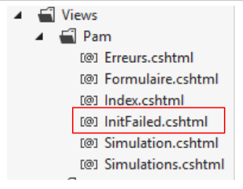 |
Its code is as follows:
@model IEnumerable<string>
@{
Layout = null;
}
<!DOCTYPE html>
<html>
<head>
<title>@ViewBag.Title</title>
<meta charset="utf-8" />
<meta name="viewport" content="width=device-width" />
<link rel="stylesheet" href="~/Content/Site.css" />
</head>
<body>
<table>
<tbody>
<tr>
<td>
<h2>Simulateur de calcul de paie</h2>
</td>
</tbody>
</table>
<hr />
<h2>Les erreurs suivantes se sont produites à l'initialisation de l'application : </h2>
<ul>
@foreach (string msg in Model)
{
<li>@msg</li>
}
</ul>
</body>
</html>
- line 1: the view template is a list of error messages. These are displayed in an HTML list on lines 24–29;
- line 3: this view does not use the master page [_Layout.cshtml]. This is because we do not want the menu provided by that document. We therefore build a complete HTML page (lines 5–23).
To test this, simply modify the instantiation of the [business] layer in [Application_Start] as follows:
try
{
// instantiation layer [business]
application.PamMetier = ContextRegistry.GetContext().GetObject("xx") as IPamMetier;
}
catch (Exception ex)
{
application.InitException = ex;
}
Line 4: We are looking for an object that does not exist in the Spring objects.
When we save these changes and run the application, we get the following page:

We get an error page with no menu. The user can do nothing but acknowledge the error. This is what we wanted.
9.21. Where are we now?
We now have a working web application that operates with a simulated business layer. Its architecture is as follows:
 |
The [ASP.NET MVC] layer works with the simulated business layer through the [IPamMetier] interface. If we replace this simulated business layer with a real business layer that implements this interface, we won’t have to modify the web layer code. Thanks to [Spring.net], we’ll just need to change the implementation class of the [IPamMetier] interface in [web.config]. We’re moving forward with this approach.
The new architecture will be as follows:
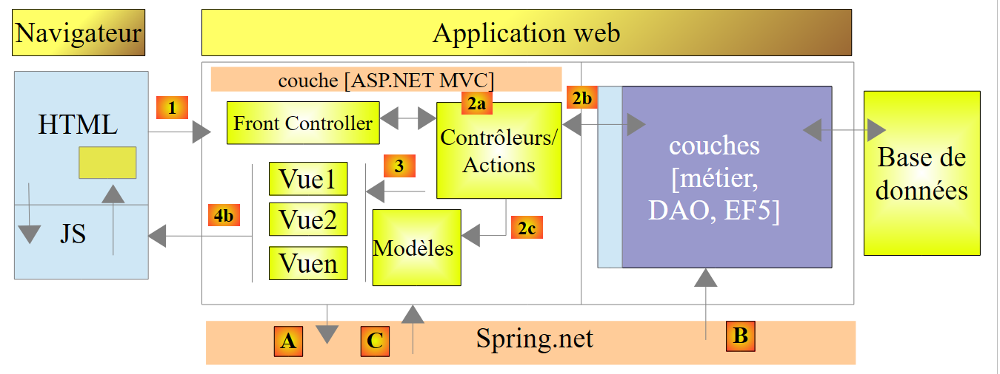 |
We will describe the following in turn:
- the [EF5] layer connected to the DBMS. It will be implemented using Entity Framework 5 (EF5);
- the [DAO] layer, which manages data access via the [EF5] layer. This allows it to be unaware of the DBMS. This layer simply manipulates the application entities [Employee, Contributions, Allowances];
- the [business] layer that implements salary calculation.
The new architecture is the one presented at the very beginning of this document in section 1.1, which we now summarize:
 |
- the [Web] layer is the layer in contact with the web application user. The user interacts with the web application through web pages viewed in a browser. ASP.NET MVC resides in this layer and only in this layer;
- the [business] layer implements the application’s business rules, such as calculating a salary or an invoice. This layer uses data from the user via the [Web] layer and from the DBMS via the [DAO] layer;
- The [DAO] (Data Access Objects) layer, the [ORM] (Object Relational Mapper) layer, and the ADO.NET connector manage access to DBMS data. The [ORM] layer acts as a bridge between the objects handled by the [DAO] layer and the rows and columns of data in a relational database. Two ORMs are commonly used in the .NET world: NHibernate (http://sourceforge.net/projects/nhibernate/) and Entity Framework (http://msdn.microsoft.com/en-us/data/ef.aspx);
- The integration of the layers can be achieved using a dependency injection container such as Spring (http://www.springframework.net/);
The [business], [DAO], and [EF5] layers will be implemented using C# projects. From now on, we will be working with Visual Studio Express 2012 for Desktop.
9.22. Step 15: Setting up the Entity Framework 5 layer
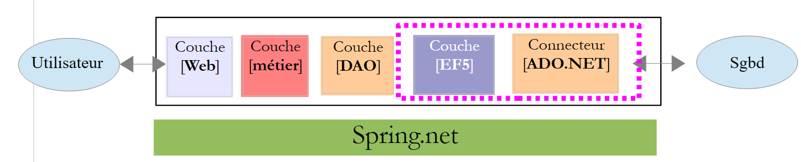 |
Creating the [EF5] layer is less about coding and more about configuration. To understand how to write this layer, read the document [Introduction to Entity Framework 5 Code First] available at the URL [http://tahe.developpez.com/dotnet/ef5cf-02/]. It is a fairly lengthy document. The fundamentals are covered in the first four chapters. The specific sections to read will be indicated. When we refer to this document, we will use the notation [refEF5].
In addition, we will sometimes need C# concepts. We will then refer to the course [Introduction to the C# Language] available at the URL [http://tahe.developpez.com/dotnet/csharp/] using the notation [refC#].
9.22.1. The Database
The application’s database was introduced in Section 9.4. It is a MySQL database named [dbpam_ef5] (pam = Paie Assistante Maternelle). This database has an administrator named root with no password.
Let’s review the database schema. It has three tables:
There is a foreign key relationship between the EMPLOYEES(INDEMNITY_ID) column and the INDEMNITIES(ID) column. Part of this database’s structure is dictated by its use with EF5.
The SQL script for creating the database is as follows:
-- phpMyAdmin SQL Dump
-- version 3.5.1
-- http://www.phpmyadmin.net
--
-- Customer: localhost
-- Generated on: Mon November 04, 2013 at 09:34 am
-- Server version: 5.5.24-log
-- Version of PHP: 5.4.3
SET SQL_MODE="NO_AUTO_VALUE_ON_ZERO";
SET time_zone = "+00:00";
/*!40101 SET @OLD_CHARACTER_SET_CLIENT=@@CHARACTER_SET_CLIENT */;
/*!40101 SET @OLD_CHARACTER_SET_RESULTS=@@CHARACTER_SET_RESULTS */;
/*!40101 SET @OLD_COLLATION_CONNECTION=@@COLLATION_CONNECTION */;
/*!40101 SET NAMES utf8 */;
--
-- Database: `dbpam_ef5`
--
-- --------------------------------------------------------
--
-- Structure of the `contributions` table
--
CREATE TABLE IF NOT EXISTS `cotisations` (
`ID` bigint(20) NOT NULL AUTO_INCREMENT,
`SECU` double NOT NULL,
`RETRAITE` double NOT NULL,
`CSGD` double NOT NULL,
`CSGRDS` double NOT NULL,
`VERSIONING` int(11) NOT NULL,
PRIMARY KEY (`ID`)
) ENGINE=InnoDB DEFAULT CHARSET=utf8 AUTO_INCREMENT=12 ;
--
-- Contents of the `contributions` table
--
INSERT INTO `cotisations` (`ID`, `SECU`, `RETRAITE`, `CSGD`, `CSGRDS`, `VERSIONING`) VALUES
(11, 9.39, 7.88, 6.15, 3.49, 1);
--
-- Contribution triggers
--
DROP TRIGGER IF EXISTS `INCR_VERSIONING_COTISATIONS`;
DELIMITER //
CREATE TRIGGER `INCR_VERSIONING_COTISATIONS` BEFORE UPDATE ON `cotisations`
FOR EACH ROW BEGIN
SET NEW.VERSIONING:=OLD.VERSIONING+1;
END
//
DELIMITER ;
DROP TRIGGER IF EXISTS `START_VERSIONING_COTISATIONS`;
DELIMITER //
CREATE TRIGGER `START_VERSIONING_COTISATIONS` BEFORE INSERT ON `cotisations`
FOR EACH ROW BEGIN
SET NEW.VERSIONING:=1;
END
//
DELIMITER ;
-- --------------------------------------------------------
--
-- Structure of the `employees` table
--
CREATE TABLE IF NOT EXISTS `employes` (
`ID` bigint(20) NOT NULL AUTO_INCREMENT,
`PRENOM` varchar(20) CHARACTER SET latin1 NOT NULL,
`SS` varchar(15) CHARACTER SET latin1 NOT NULL,
`ADRESSE` varchar(50) CHARACTER SET latin1 NOT NULL,
`CP` varchar(5) CHARACTER SET latin1 NOT NULL,
`VILLE` varchar(30) CHARACTER SET latin1 NOT NULL,
`NOM` varchar(30) CHARACTER SET latin1 NOT NULL,
`VERSIONING` int(11) NOT NULL,
`INDEMNITE_ID` bigint(20) NOT NULL,
PRIMARY KEY (`ID`),
UNIQUE KEY `SS` (`SS`),
KEY `FK_EMPLOYES_INDEMNITE_ID` (`INDEMNITE_ID`)
) ENGINE=InnoDB DEFAULT CHARSET=utf8 AUTO_INCREMENT=26 ;
--
-- Contents of the `employees` table
--
INSERT INTO `employes` (`ID`, `PRENOM`, `SS`, `ADRESSE`, `CP`, `VILLE`, `NOM`, `VERSIONING`, `INDEMNITE_ID`) VALUES
(24, 'Marie', '254104940426058', '5 rue des oiseaux', '49203', 'St Corentin', 'Jouveinal', 1, 93),
(25, 'Justine', '260124402111742', 'La Brûlerie', '49014', 'St Marcel', 'Laverti', 1, 94);
--
-- Used' triggers
--
DROP TRIGGER IF EXISTS `INCR_VERSIONING_EMPLOYES`;
DELIMITER //
CREATE TRIGGER `INCR_VERSIONING_EMPLOYES` BEFORE UPDATE ON `employes`
FOR EACH ROW BEGIN
SET NEW.VERSIONING:=OLD.VERSIONING+1;
END
//
DELIMITER ;
DROP TRIGGER IF EXISTS `START_VERSIONING_EMPLOYES`;
DELIMITER //
CREATE TRIGGER `START_VERSIONING_EMPLOYES` BEFORE INSERT ON `employes`
FOR EACH ROW BEGIN
SET NEW.VERSIONING:=1;
END
//
DELIMITER ;
-- --------------------------------------------------------
--
-- Structure of the `indemnities` table
--
CREATE TABLE IF NOT EXISTS `indemnites` (
`ID` bigint(20) NOT NULL AUTO_INCREMENT,
`ENTRETIEN_JOUR` double NOT NULL,
`REPAS_JOUR` double NOT NULL,
`INDICE` int(11) NOT NULL,
`INDEMNITES_CP` double NOT NULL,
`BASE_HEURE` double NOT NULL,
`VERSIONING` int(11) NOT NULL,
PRIMARY KEY (`ID`),
UNIQUE KEY `INDICE` (`INDICE`)
) ENGINE=InnoDB DEFAULT CHARSET=utf8 AUTO_INCREMENT=95 ;
--
-- Contents of the `indemnities` table
--
INSERT INTO `indemnites` (`ID`, `ENTRETIEN_JOUR`, `REPAS_JOUR`, `INDICE`, `INDEMNITES_CP`, `BASE_HEURE`, `VERSIONING`) VALUES
(93, 2.1, 3.1, 2, 15, 2.1, 1),
(94, 2, 3, 1, 12, 1.93, 1);
--
-- Compensation triggers
--
DROP TRIGGER IF EXISTS `INCR_VERSIONING_INDEMNITES`;
DELIMITER //
CREATE TRIGGER `INCR_VERSIONING_INDEMNITES` BEFORE UPDATE ON `indemnites`
FOR EACH ROW BEGIN
SET NEW.VERSIONING:=OLD.VERSIONING+1;
END
//
DELIMITER ;
DROP TRIGGER IF EXISTS `START_VERSIONING_INDEMNITES`;
DELIMITER //
CREATE TRIGGER `START_VERSIONING_INDEMNITES` BEFORE INSERT ON `indemnites`
FOR EACH ROW BEGIN
SET NEW.VERSIONING:=1;
END
//
DELIMITER ;
--
-- Constraints for exported tables
--
--
-- Constraints for the `employees` table
--
ALTER TABLE `employes`
ADD CONSTRAINT `FK_EMPLOYES_INDEMNITE_ID` FOREIGN KEY (`INDEMNITE_ID`) REFERENCES `indemnites` (`ID`);
/*!40101 SET CHARACTER_SET_CLIENT=@OLD_CHARACTER_SET_CLIENT */;
/*!40101 SET CHARACTER_SET_RESULTS=@OLD_CHARACTER_SET_RESULTS */;
/*!40101 SET COLLATION_CONNECTION=@OLD_COLLATION_CONNECTION */;
Note the following points:
- lines 30, 73, 122: the primary keys of the tables are in [AUTO_INCREMENT] mode. These are managed by MySQL, not EF5;
- line 83: the SS number has a uniqueness constraint;
- line 130: the employee ID has a uniqueness constraint;
- lines 168–169: the foreign key from the [employees] table to the [benefits] table;
- line 49: a trigger is an SQL script embedded by the DBMS that is executed at specific times;
- lines 51–54: the trigger [INCR_VERSIONING_COTISATIONS] fires before any modification of a row in the [cotisations] table. It then increments the [VERSIONING] column by one;
- Lines 59–62: The [START_VERSIONING_COTISATIONS] trigger fires before any new row is inserted into the [cotisations] table. It then initializes the [VERSIONING] column to 1;
- Ultimately, the [VERSIONING] column is set to 1 when a row is created in the [contributions] table and is then incremented by 1 each time a modification is made to that row. This mechanism allows EF5 to manage concurrent access to a row in the [contributions] table as follows:
- A process P1 reads a row L from the [contributions] table at time T1. The row has a [VERSIONING] column value of V1;
- a process P2 reads the same row L from the [contributions] table at time T2. The row has a [VERSIONING] column value of V1 because process P1 has not yet committed its modification;
- Process P1 modifies row L and commits its change. The [VERSIONING] column of row L then changes to V1+1 due to the [INCR_VERSIONING_COTISATIONS] trigger;
- Process P2 then does the same. EF5 then throws an exception because process P2 has a row with a [VERSIONING] column having a value of V1, which differs from the value found in the database, which is V1+1. A row can only be modified if it has the same [VERSIONING] value as in the database.
This is called optimistic concurrency control. With EF5, a field playing this role must have the [ConcurrencyCheck] annotation.
- A similar mechanism is created for the [employes] table (lines 98–113) and the [indemnites] table (lines 144–159).
Task: Create the MySQL database [dbpam_ef5] using the previous SQL script. The [dbpam_ef5] database must be created beforehand because the script does not create it. We will then run the SQL script on this database.
9.22.2. The Visual Studio Project
Using Visual Studio Express 2012 for Desktop, we load the [pam-td] solution used when building the [web] layer:
 |
- in [1], VS 2012 Express for Desktop is unable to load the web project [pam-web-01]. This is normal and not a problem;
- in [2], we add a new project to the [pam-td] solution;
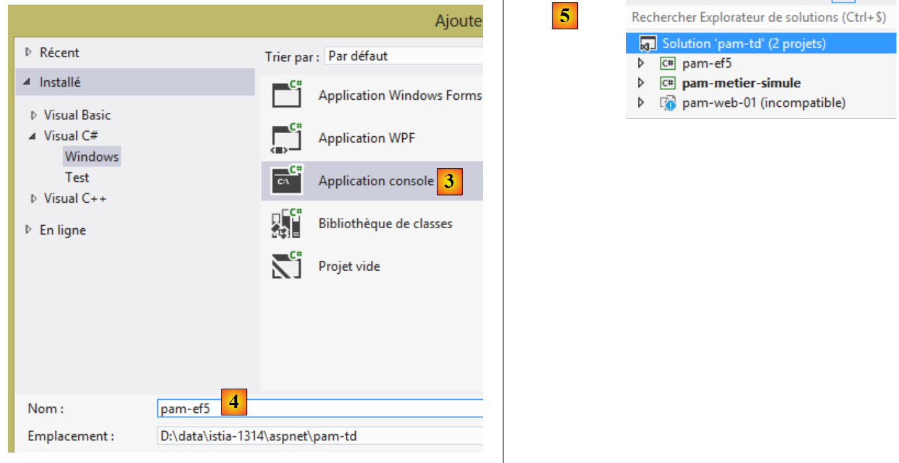 |
- in [3], the project is of type [console] and is named [4] [pam-ef5];
- in [5], the project is created. Its name is not in bold, so it is not the solution's startup project;
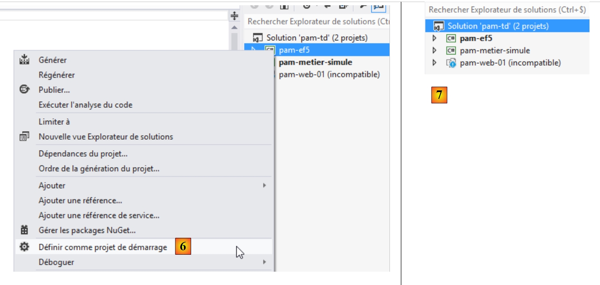 |
- In [6] and [7], we set the new project as the startup project.
9.22.3. Adding the necessary references to the project
Let’s look at the project as a whole:
 |
Our project requires a number of DLLs:
- the Entity Framework 5 DLL;
- the ADO.NET connector DLL for the MySQL DBMS.
Section 4.2 of [refEF5] explains how to install these DLLs using the [NuGet] tool. Currently (Nov 2013), the available version of Entity Framework is version 6 (EF6). Unfortunately, it appears that the MySQL ADO.NET connector available (Nov 2013) via [NuGet] is not compatible with EF6. Therefore, we have placed the EF5 DLL and the other DLLs required for the [pam-ef5] project in a [lib] folder [1]
 |
We have placed other DLLs in the [lib] folder. We will use them later. In [2], we add these new DLLs to the project.
 |
- In [3], navigate through the file system to the [lib] folder;
- In [4], select the three DLLs and then click OK twice;
- In [5], the three DLLs have been added to the project references.
We need another DLL. This one will be found among those in the machine’s .NET framework.
 |
- In [1], add a new reference to the project;
 |
- In [2], select [Assemblies];
- In [3], type [system.component];
- In [4], select the [System.ComponentModel.DataAnnotations] assembly;
- In [5], the reference has been added.
We are now ready to code and configure.
9.22.4. Entity Framework Entities
Entity Framework entities are classes that encapsulate the rows of the various database tables. Let’s review them:
In the [web] layer, we used the [Employee, Contributions, Benefits] entities (see section 9.7.3, page211 ). They were not exact representations of the tables. Thus, the [ID, VERSIONING] columns were ignored. Here, that will not be the case because they are used by the EF5 ORM. We will therefore add the missing properties to them. We create these entities in a [Models] folder within the project:
 |
Their new code is now as follows:
Class [Cotisations]
using System;
namespace Pam.EF5.Entites
{
public class Cotisations
{
public int Id { get; set; }
public double CsgRds { get; set; }
public double Csgd { get; set; }
public double Secu { get; set; }
public double Retraite { get; set; }
public int Versioning { get; set; }
// signature
public override string ToString()
{
return string.Format("Cotisations[{0},{1},{2},{3}, {4}, {5}]", Id, Versioning, CsgRds, Csgd, Secu, Retraite);
}
}
}
- line 3: the namespace has been adapted to the new project;
- the properties in lines 7 and 12 have been added to reflect the structure of the [contributions] table;
- line 17: the [ToString] method now displays the two new fields.
Class [Indemnites]
using System;
namespace Pam.EF5.Entites
{
public class Indemnites
{
public int Id { get; set; }
public int Indice { get; set; }
public double BaseHeure { get; set; }
public double EntretienJour { get; set; }
public double RepasJour { get; set; }
public double IndemnitesCp { get; set; }
public int Versioning { get; set; }
// signature
public override string ToString()
{
return string.Format("Indemnités[{0},{1},{2},{3},{4}, {5}, {6}]", Id, Versioning, Indice, BaseHeure, EntretienJour, RepasJour, IndemnitesCp);
}
}
}
- line 3: the namespace has been adapted to the new project;
- the properties in lines 7 and 13 have been added to reflect the structure of the [indemnites] table;
- line 18: the [ToString] method now displays the two new fields.
Class [Employee]
using System;
namespace Pam.EF5.Entites
{
public class Employe
{
public int Id { get; set; }
public string SS { get; set; }
public string Nom { get; set; }
public string Prenom { get; set; }
public string Adresse { get; set; }
public string Ville { get; set; }
public string CodePostal { get; set; }
public Indemnites Indemnites { get; set; }
public int Versioning { get; set; }
// signature
public override string ToString()
{
return string.Format("Employé[{0},{1},{2},{3},{4},{5}, {6}, {7}]", Id, Versioning, SS, Nom, Prenom, Adresse, Ville, CodePostal);
}
}
}
- line 3: the namespace has been adapted to the new project;
- the properties in lines 8 and 16 have been added to reflect the structure of the [employees] table;
- line 21: the [ToString] method now displays the two new fields.
To be usable by the EF5 ORM, the properties of these classes must be annotated.
Task: Using section 3.4 [Creating the database from entities] of [refEF5], add the annotations required by EF5 to the [Employee, Contributions, Benefits] entities.
Tips:
- you only need to create annotations. Do not follow the [database creation] section of the referenced paragraph;
- for the [Table] annotation, follow the MySQL example in section 4.2 of [refEF5];
- For the [ConcurrencyCheck] annotation on the [Versioning] property, follow the Oracle example in section 5.2 of [refEF5];
- for the foreign key that the [employes] table has on the [indemnités] table, follow example 3.4.2 from [refEF5]. You will thus add a new property to the [Employe] entity:
public int IndemniteId { get; set; }
whose value will be that of the [INDEMNITES_ID] column in the [employes] table. You will apply foreign key annotations to the [IndemniteId] and [Indemnites] properties of the [Employe] entity. To do this, follow Example 3.4.2 in [refEF5];
- you will not manage the reverse relationships of the foreign keys;
- this task requires some reading of [refEF5].
9.22.5. Configuring the EF5 ORM
Let’s put the project into context:
 |
The [EF5] layer will access the database via the [ADO.NET] connector for the MySQL DBMS. It requires certain information to access this database. This information is located in various parts of the project.
First, we must create the database context. This context is a class derived from the system class [System.Data.Entity.DbContext]. It is used to define the object representations of the database tables. We will place this class in the [Models] folder of the project along with the EF5 entities:
 |
The [DbPamContext] class will be as follows:
using Pam.EF5.Entites;
using System.Data.Entity;
namespace Pam.Models
{
public class DbPamContext : DbContext
{
public DbSet<Employe> Employes { get; set; }
public DbSet<Cotisations> Cotisations { get; set; }
public DbSet<Indemnites> Indemnites { get; set; }
}
}
- line 6: the [DbPamContext] class derives from the system class [DbContext];
- lines 8–10: the object representations of the three database tables. Their type is [DbSet<Entity>], where [Entity] is one of the Entity Framework entities we just defined. The [DbSet] type can be viewed as a collection of entities. It can be queried using LINQ (Language-Integrated Query). Readers unfamiliar with LINQ are encouraged to read section 3.5.4 [Learning LINQ with LINQPad] in [refEF5].
We will henceforth refer to the [DbPamContext] class as the persistence context of the [dbpam_ef5] database. This is standard terminology in ORMs (Object-Relational Mappers). This persistence context is an object-oriented representation of the database. We also refer to the synchronization of the persistence context with the database: modifications, additions, and deletions made to the persistence context are reflected in the database. This synchronization occurs at specific times: when the persistence context is closed, at the end of a transaction, or before an SQL SELECT query on the database.
Information about the DBMS and the database is stored in [App.config].
 |
The necessary configuration in [app.config] is explained in the following sections of [refEF5]:
- 3.4 for the SQL Server DBMS. This is where the main principles of EF5 configuration are laid out;
- 4.2 for the MySQL DBMS.
We follow this last section and configure the [app.config] file as follows:
<?xml version="1.0" encoding="utf-8" ?>
<configuration>
<startup>
<supportedRuntime version="v4.0" sku=".NETFramework,Version=v4.5" />
</startup>
<!-- configuration EF5 -->
<!-- database connection string [dbam_ef5] -->
<connectionStrings>
<add name="DbPamContext"
connectionString="Server=localhost;Database=dbpam_ef5;Uid=root;Pwd=;"
providerName="MySql.Data.MySqlClient" />
</connectionStrings>
<!-- the MySQL factory provider -->
<system.data>
<DbProviderFactories>
<remove invariant="MySql.Data.MySqlClient"/>
<add name="MySQL Data Provider" invariant="MySql.Data.MySqlClient" description=".Net Framework Data Provider for MySQL"
type="MySql.Data.MySqlClient.MySqlClientFactory, MySql.Data, Version=6.5.4.0, Culture=neutral, PublicKeyToken=C5687FC88969C44D"
/>
</DbProviderFactories>
</system.data>
</configuration>
- Lines 6–21 have been added. They must be inserted within the <configuration> tag on lines 2 and 22;
- Lines 8–12: define database connection strings, an ADO.NET concept (see section 7.3.5 in [refC#]);
- Lines 9–11: define the connection string to the MySQL database [dbpam_ef5];
- line 9: the name of the connection string. Here, you cannot enter just anything. By default, you must enter the name of the class implementing the database context:
public class DbPamContext : DbContext
{
public DbSet<Employe> Employes { get; set; }
public DbSet<Cotisations> Cotisations { get; set; }
public DbSet<Indemnites> Indemnites { get; set; }
}
The class is called [DbPamContext]. On line 9 of [app.config], you must set [name="DbPamContext"];
- Line 10: a connection string specific to the MySQL DBMS:
- [Server=localhost]: IP address of the machine hosting the DBMS. Here, it is the local machine [localhost];
- [Database=dbpam_ef5;]: database name,
- [Uid=root;]: the username used to connect to the database,
- [Pwd=;]: password for this login. Here, no password;
- line 10: [providerName="MySql.Data.MySqlClient"] is the name of the ADO.NET provider to use. This name corresponds to the [invariant] attribute on line 17. You can use any name as long as you follow the previous rule and a provider with the same invariant has not already been registered;
- Lines 15–20: define an ADO.NET provider factory. The [DbProviderFactory] is a somewhat vague concept to me. Judging by its name, it appears to be a class capable of generating the ADO.NET provider that provides access to the DBMS, in this case MySQL 5. These lines are usually copied and pasted. They are necessary. Pay attention to the [Version=6.5.4.0] attribute on line 16. This version number must match the version number of the [MySql.Data] DLL that you added to the project references:
 |
- Line 16 is important. Because you cannot install two providers with the same name, start by removing any existing provider that might have the same name as the one you are installing on line 17;
That’s it. It’s complicated and confusing the first time you do it, but over time it becomes simple because it’s always the same process you repeat.
9.22.6. Testing the [EF5] layer
We are ready to test our [EF5] layer. We do this using the existing [Program.cs] program:
 |
We will display the contents of the database. If we succeed, it will be an initial indication that our configuration is correct. A code example is available in section 3.5.3 of [refEF5]. The code for [Program.cs] will be as follows:
using Pam.EF5.Entites;
using Pam.Models;
using System;
namespace Pam
{
class Program
{
static void Main(string[] args)
{
try
{
using (var context = new DbPamContext())
{
// display table contents
Console.WriteLine("Liste des employés ----------------------------------------");
foreach (Employe employe in context.Employes)
{
Console.WriteLine(employe);
}
Console.WriteLine("Liste des indemnités --------------------------------------");
foreach (Indemnites indemnite in context.Indemnites)
{
Console.WriteLine(indemnite);
}
Console.WriteLine("Liste des cotisations -------------------------------------");
foreach (Cotisations cotisations in context.Cotisations)
{
Console.WriteLine(cotisations);
}
}
}
catch (Exception e)
{
Console.WriteLine(e);
return;
}
}
}
}
- line 13: all database operations are performed through this database context. We have implemented this context using the [DbPamContext] class. We also refer to it as the database persistence context;
- lines 13, 31: operations on the persistence context are performed within a [using] block. The persistence context is opened at the beginning of the [using] block and automatically closed when the block ends. This means that any changes made to the persistence context within the [using] block will be reflected in the database when the block ends. A series of SQL statements is then sent to the database within a transaction. This means that if an SQL statement fails, all previously issued SQL statements are rolled back. An exception is then thrown by EF5;
- line 17: the expression [context.Employees] refers to the object model of the [employees] table. Recall that [Employees] is a property of the persistence context [DbPamContext]:
public class DbPamContext : DbContext
{
public DbSet<Employe> Employes { get; set; }
public DbSet<Cotisations> Cotisations { get; set; }
public DbSet<Indemnites> Indemnites { get; set; }
}
- line 17: the fact that the [foreach] loop iterates over the [context.Employees] collection will fetch all employees from the database into the persistence context. An SQL SELECT statement will therefore be issued by EF5;
- lines 17–20: we iterate through the collection of employees, and on line 19, we use the [ToString] method of the [Employee] class to display the employees on the console;
- lines 21–25: same for the benefits collection;
- lines 27–30: same for the contributions collection.
Let’s revisit the definition of the [Employee] entity:
using System;
namespace Pam.EF5.Entites
{
public class Employe
{
public int Id { get; set; }
public string SS { get; set; }
public string Nom { get; set; }
public string Prenom { get; set; }
public string Adresse { get; set; }
public string Ville { get; set; }
public string CodePostal { get; set; }
public Indemnites Indemnites { get; set; }
public int Versioning { get; set; }
// signature
public override string ToString()
{
return string.Format("Employé[{0},{1},{2},{3},{4},{5}, {6}, {7}]", Id, Versioning, SS, Nom, Prenom, Adresse, Ville, CodePostal);
}
}
}
- Line 15: An employee has a reference to a benefit.
When an employee is brought into the persistence context, is their allowance brought in as well? The default answer is no. This is the concept of [Lazy Loading]. Entities referenced within another entity are not brought into the persistence context along with that other entity. They are only brought in when requested by the code within an open persistence context. If the persistence context is closed, an exception is thrown.
Thus, if the [ToString] method had referenced the [Indemnites] property as follows:
// signature
public override string ToString()
{
return string.Format("Employé[{0},{1},{2},{3},{4},{5},{6},{7},{8}]", Id, Versioning, SS, Nom, Prenom, Adresse, Ville, CodePostal, Indemnites);
}
the following operation in [Program.cs]:
foreach (Employe employe in context.Employes)
{
Console.WriteLine(employe);
}
would have returned not only the employees but also their benefits to the persistence context, because in line 3, the [Employee.ToString] method is called and it references the [Benefits] entity.
Executing [Program.cs] yields the following results:
What to do if it doesn't work? You're in trouble... There are many possible sources of error:
- check the EF5 configuration (section 9.22.5);
- check your Entity Framework entities (section 9.22.4).
9.22.7. [EF5] Layer DLL
We are turning our project into a class library so that, upon generation, a .dll assembly is generated rather than an .exe. This is done in the project properties as seen in section 9.7.6, for the simulated business layer.
Task: Change the project type [pam-ef5] to a class library, then regenerate the project.
9.23. Step 16: Implementing the [DAO] layer
9.23.1. The [DAO] layer interface
 |
As we did for the simulated [business] layer, the [DAO] layer will be accessible via an interface. What will it be?
Let’s look at the [IPamMetier] interface of the simulated [business] layer we built:
public interface IPamMetier {
// list of all employee identities
Employe[] GetAllIdentitesEmployes();
// ------- salary calculation
FeuilleSalaire GetSalaire(string ss, double heuresTravaillées, int joursTravaillés);
}
Line 3: The [GetAllEmployeeIDs] method is used to populate the dropdown list on the home page:
 |
These employees must be retrieved from the database.
Line 6, the [GetSalary] method calculates the pay stub for an employee whose SSN is known. Recall the definition of the [PayStub] type:
public class FeuilleSalaire
{
// automatic properties
public Employe Employe { get; set; }
public Cotisations Cotisations { get; set; }
public ElementsSalaire ElementsSalaire { get; set; }
}
The information in lines 5 and 6 will come from the database. Remember that an employee has an [Allowances] property. This information must also be retrieved.
We could therefore start with the following interface for the [DAO] layer:
public interface IPamDao {
// list of all employee identities
Employe[] GetAllIdentitesEmployes();
// an individual employee with benefits
Employe GetEmploye(string ss);
// list of all contributions
Cotisations GetCotisations();
}
9.23.2. The Visual Studio project
Task: Add a new [console] project named [pam-dao] to the [pam-td] solution. Set it as the solution's startup project.

9.23.3. Adding the necessary references to the project
Let’s look at the project as a whole:
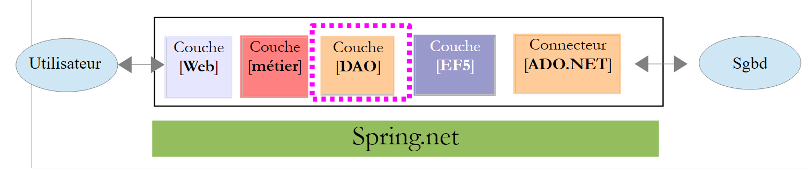 |
The [pam-dao] project requires a number of DLLs:
- all those referenced by the [pam-ef5] project;
- the one from the [pam-ef5] project itself.
Additionally, we will use [Spring.net] to instantiate the [DAO] layer. For this, we need the [Spring.core] and [Common.Logging] DLLs. These DLLs are located in the [lib] folder of the case study materials.
Task: Add these various references to the [pam-dao] project.
 |
9.23.4. Implementation of the [DAO] layer
 |
Above, the [PamException] class is the one defined in section 9.7.4. We simply change its namespace (line 1 below):
namespace Pam.Dao.Entites
{
// exceptional class
public class PamException : Exception
{
....
}
}
The [IPamDao] interface is the one we just defined in Section 9.23.1:
using Pam.EF5.Entites;
namespace Pam.Dao.Service
{
public interface IPamDao
{
// list of all employee identities
Employe[] GetAllIdentitesEmployes();
// an individual employee with benefits
Employe GetEmploye(string ss);
// list of all contributions
Cotisations GetCotisations();
}
}
The [PamDaoEF5] class implements this interface using the EF5 ORM. Its code is as follows:
using Pam.Dao.Entites;
using Pam.EF5.Entites;
using Pam.Models;
using System;
using System.Linq;
namespace Pam.Dao.Service
{
public class PamDaoEF5 : IPamDao
{
// private fields
private Cotisations cotisations;
private Employe[] employes;
// Manufacturer
public PamDaoEF5()
{
// contribution
try
{
....
}
catch (Exception e)
{
throw new PamException("Erreur système lors de la construction de la couche [DAO]", e, 1);
}
}
// GetCotisations
public Cotisations GetCotisations()
{
return cotisations;
}
// GetAllIdentitesEmploye
public Employe[] GetAllIdentitesEmployes()
{
return employes;
}
// GetEmploye
public Employe GetEmploye(string SS)
{
try
{
....
catch (Exception e)
{
throw new PamException(string.Format("Erreur système lors de la recherche de l'employé [{0}]", SS), e, 2);
}
}
}
}
Note:
- line 10: the class [PamDaoEF5] implements the interface [IPamDao];
- the tables [contributions] and [employees] are cached in the properties of lines 13–14. Employees do not include their allowances;
- lines 17–28: the constructor initializes lines 13–14;
- Lines 43–52: The [GetEmploye] method returns an employee along with their allowances. It takes the employee’s social security number as a parameter. If the employee does not exist in the database, the method will return a null pointer.
Task: Complete the code for the [PamDaoEF5] class.
For the constructor, use the test code for the [EF5] layer presented in section 9.22.6 as a guide. For the [GetEmploye] method, use the example in section 3.5.7 [Eager and Lazy loading] of [refEF5] as a guide.
9.23.5. Configuring the [DAO] layer
As done in Section 9.22.5, we need to configure EF5 in the project’s [App.config] file:
 |
Task 1: Configure EF5 in [App.config]. Simply replicate what was done in the [App.config] file of the [EF5] layer.
Our test program will use [Spring.net] to obtain a reference to the [DAO] layer.
Task 2: Using the information from Section 9.20.2, modify the [app.config] configuration file in the [pam-dao] project so that it defines a Spring object named [pamdao] associated with the [PamDaoEF5] class we just created. The [app.config] and [web.config] files have the same structure. Make sure that the <configSections> tag is the first tag encountered after the root <configuration> tag.
9.23.6. Testing the [DAO] layer
We are ready to test our [DAO] layer. We do this using the existing [Program.cs] program:
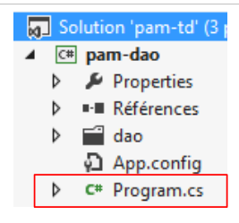 |
We will test the various features of the [DAO] layer interface. The code for [Program.cs] will be as follows:
using Pam.Dao.Service;
using Pam.EF5.Entites;
using Spring.Context.Support;
using System;
namespace Pam.Dao.Tests
{
public class Program
{
public static void Main()
{
try
{
// layer instantiation [dao]
IPamDao pamDao = (IPamDao)ContextRegistry.GetContext().GetObject("pamdao");
// list of employee identities
foreach (Employe Employe in pamDao.GetAllIdentitesEmployes())
{
Console.WriteLine(Employe.ToString());
}
// an employee with benefits
Console.WriteLine("------------------------------------");
Employe e = pamDao.GetEmploye("254104940426058");
Console.WriteLine("employé= {0}, indemnités={1}", e, e.Indemnites);
Console.WriteLine("------------------------------------");
// an employee who doesn't exist
Employe employe = pamDao.GetEmploye("xx");
Console.WriteLine("Employé n° xx");
Console.WriteLine((employe == null ? "null" : employe.ToString()));
Console.WriteLine("------------------------------------");
// list of contributions
Cotisations cotisations = pamDao.GetCotisations();
Console.WriteLine(cotisations.ToString());
}
catch (Exception ex)
{
// exception display
Console.WriteLine(ex.ToString());
}
//break
Console.ReadLine();
}
}
}
- Line 15: We obtain a reference to the [DAO] layer using [Spring.net].
The results of running this program are as follows:
9.23.7. Layer DLL [DAO]
Task: Convert the project type [pam-dao] to a class library, then regenerate the project (repeat the steps in section 9.22.7).
9.24. Step 17: Setting up the [business] layer
9.24.1. The [business] layer interface
 |
The interface of the [business] layer will be the [IPamMetier] interface of the simulated [business] layer that we built in section 9.7.2.
public interface IPamMetier {
// list of all employee identities
Employe[] GetAllIdentitesEmployes();
// ------- salary calculation
FeuilleSalaire GetSalaire(string ss, double heuresTravaillées, int joursTravaillés);
}
9.24.2. The Visual Studio project
Task: Add a new [console] project named [pam-metier] to the [pam-td] solution. Set it as the solution's startup project.
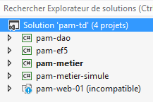
9.24.3. Adding the necessary references to the project
Let’s look at the project as a whole:
 |
The [pam-metier] project requires a number of DLLs:
- all those referenced by the [pam-dao] and [pam-ef5] projects;
- the DLLs from the [pam-dao] and [pam-ef5] projects themselves.
Task: Add these various references to the [pam-metier] project.

9.24.4. Implementation of the [business] layer
 |
Above, we find four elements already used in the simulated [business] layer (see Section 9.7). There may be changes to the namespaces imported by these different classes. Handle them. The [PamMetier] class implements the [IPamMetier] interface as follows:
using Pam.Dao.Service;
using Pam.EF5.Entites;
using Pam.Metier.Entites;
using System;
namespace Pam.Metier.Service
{
public class PamMetier : IPamMetier
{
// reference to layer [DAO] initialized by Spring
public IPamDao PamDao { get; set; }
// list of all employee identities
public Employe[] GetAllIdentitesEmployes()
{
...
}
// an individual employee with benefits
public Employe GetEmploye(string ss)
{
...
}
// contributions
public Cotisations GetCotisations()
{
...
}
// wage calculation
public FeuilleSalaire GetSalaire(string ss, double heuresTravaillées, int joursTravaillés)
{
// SS : employee's SS number
// HeuresTravaillées: number of hours worked
// Days worked: number of days worked
...
}
}
- Line 13: We have a reference to the [DAO] layer. It will be initialized by Spring when the [PamMetier] class is instantiated. Therefore, when the various methods are executed, line 13 has already been initialized.
Task: Complete the code for the [PamMetier] class. If in [GetSalaire] we find that the employee with SS number does not exist, we will throw a [PamException]. The method for calculating the salary is explained in section 9.5. Be sure to round all intermediate calculations to two decimal places.
9.24.5. Configuring the [business] layer
As done in section 9.22.5, we need to configure EF5 in the project’s [app.config] file:
 |
Task 1: Configure EF5 in [app.config]. Simply replicate what was done in the [app.config] file of the [EF5] layer.
Our test program will use [Spring.net] to obtain a reference to the [business] layer.
Task 2: Using what you did previously in section 9.23.5, modify the [app.config] configuration file of the [pam-metier] project so that it defines a Spring object named [pammetier] associated with the [PamMetier] class we just created. The easiest way is to copy the [app.config] file from the [pam-dao] project and add what is missing.
There is a challenge here. Not only must you instantiate the [business] layer with the [PamMetier] class, but you must also initialize its [PamDao] property:
// référence sur la couche [DAO] initialisée par Spring
public IPamDao PamDao { get; set; }
The Spring configuration in [app.config] is then as follows:
<spring>
<context>
<resource uri="config://spring/objects" />
</context>
<objects xmlns="http://www.springframework.net">
<object id="pamdao" type=" Pam.Dao.Service.PamDaoEF5, pam-dao"/>
<object id="pammetier" type="Pam.Metier.Service.PamMetier, pam-metier">
<property name="PamDao" ref="pamdao" />
</object>
</objects>
</spring>
- line 6: defines the [pamdao] object associated with the [PamDaoEF5] class;
- line 7: defines the [pammetier] object associated with the [PamMetier] class;
- line 8: the [property] tag is used to initialize a public property of the [PamMetier] class. The [name="PamDao"] attribute corresponds to the name of the property to be initialized in the [PamMetier] class. The attribute [ref="pamdao"] indicates that the property is initialized with a reference, that of the [pamdao] object from line 6, and thus with the reference from the [DAO] layer. This is what we wanted.
9.24.6. Testing the [business] layer
We are ready to test our [business] layer. We do this using the existing [Program.cs] program:
 |
We will test the various features of the [business] layer interface. The code for [Program.cs] will be as follows:
using System;
using Pam.Dao.Entites;
using Pam.Metier.Service;
using Spring.Context.Support;
using Pam.EF5.Entites;
namespace Pam.Metier.Tests
{
public class Program
{
public static void Main()
{
try
{
// instantiation layer [business]
IPamMetier pamMetier = ContextRegistry.GetContext().GetObject("pammetier") as IPamMetier;
// list of employee identities
Console.WriteLine("Employés -----------------------------");
foreach (Employe Employe in pamMetier.GetAllIdentitesEmployes())
{
Console.WriteLine(Employe);
}
// payslip calculations
Console.WriteLine("salaires -----------------------------");
Console.WriteLine(pamMetier.GetSalaire("260124402111742", 30, 5));
Console.WriteLine(pamMetier.GetSalaire("254104940426058", 150, 20));
try
{
Console.WriteLine(pamMetier.GetSalaire("xx", 150, 20));
}
catch (PamException ex)
{
Console.WriteLine(string.Format("PamException : {0}", ex.Message));
}
}
catch (Exception ex)
{
Console.WriteLine(string.Format("Exception : {0}, Exception interne : {1}", ex.Message, ex.InnerException == null ? "" : ex.InnerException.Message));
}
// break
Console.ReadLine();
}
}
}
- Line 16: We obtain a reference to the [business] layer using [Spring.net].
The results of running this program are as follows:
9.24.7. DLL of the [business] layer
Task: Convert the [pam-business] project type to a class library, then regenerate the project (repeat the steps in section 9.22.7).
9.25. Step 18: Implementing the [web] layer
We have reached the final layer of our architecture, the [web] layer:
 |
We will reuse the [web] layer that we developed using a simulated [business] layer.
9.25.1. The Visual Studio project
We’re returning to Visual Studio Express 2012 for the Web to connect our web layer to the [business logic, DAO, EF5] layers we’ve just developed. This mainly involves some configuration and a few namespace changes.
In Visual Studio Express 2012 for Web, load the [pam-td] solution:
 |
- in [1], the [pam-td] solution in Visual Studio Express for Web. The web project [pam-web-01] becomes visible again. We had lost it in Visual Studio Express for Desktop.
- The configuration of the [pam-web-01] web project will need to be modified. Rather than modifying a working project, we will make the changes to a copy of this project. First, in [2], we remove the project from the solution (this does not delete anything from the file system).
 |
- In [3], using Windows Explorer, we duplicate the [pam-web-01] folder to [pam-web-02];
- In [4], add the [pam-web-02] project to the [pam-td] solution. It appears with the name [pam-web-01];
- In [5], change this name to [pam-web-02] and set this project as the startup project;
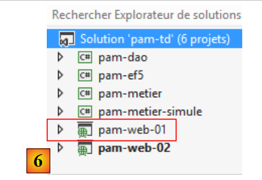 |
- In [6], load the old project [pam-web-01]. You now have all your projects. Be sure to work with [pam-web-02].
9.25.2. Adding the necessary references to the project
Let’s look at the project as a whole:
 |
The [pam-web-02] project requires a number of DLLs:
- all those referenced by the projects [pam-metier], [pam-dao], and [pam-ef5];
- those from the [pam-metier], [pam-dao], and [pam-ef5] projects themselves.
Task: Add these various references to the [pam-web-02] project. The reference to the [pam-metier-simule] project must be removed. We are switching to the [business] layer. Some DLLs are already present in the references. Remove them and then make your additions.
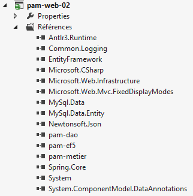
9.25.3. Implementation of the [web] layer
Build the [pam-web-02] project. Errors will appear, such as the following:

The [ApplicationModel] class uses the [Employee] type. With the [business] layer simulated, this type was defined in the [Pam.Business.Entities] namespace. It is now in the [Pam.EF5.Entities] namespace. Correct these errors as shown above.
9.25.4. Configuring the [web] layer
As done in Section 9.24.5, we need to configure EF5 in the project’s [web.config] file:
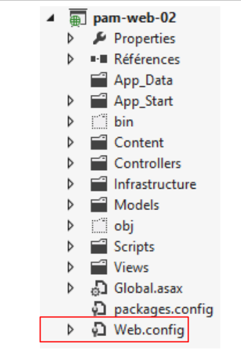 |
Task 1: Replace the entire current content of [web.config] with that of the [app.config] file from the [pam-metier] project.
The [Global.asax] file of our web application uses [Spring.net] to retrieve a reference to the [business] layer:
try
{
// instantiation layer [business]
application.PamMetier = ContextRegistry.GetContext().GetObject("pammetier") as IPamMetier;
}
catch (Exception ex)
{
application.InitException = ex;
}
Line 4: We request a reference to the Spring object named [pammetier]. This is indeed the name given to the [business] layer (check it in your [web.config] file).
9.25.5. Testing the [web] layer
We are ready to test our [web] layer. First, we will change its working port. By default, [pam-web-02] has the same configuration as [pam-web-01] and therefore runs on the same port. Experience shows that this causes problems: IIS continues to use the code from the [pam-web-01] project. Proceed as follows:
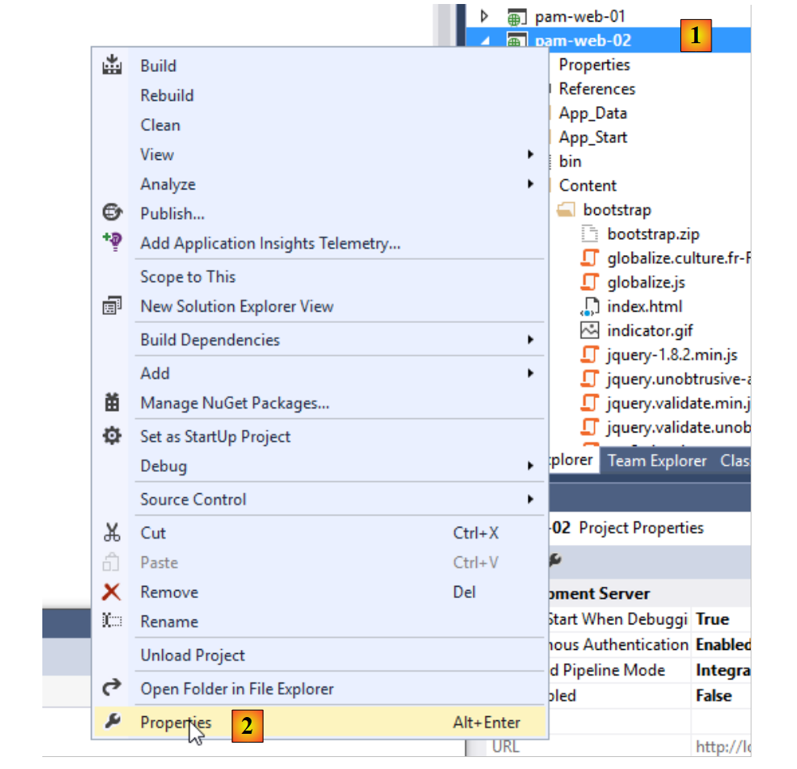 |
 |
In [4], change the port number, for example by changing the units digit.
Run the [pam-web-02] project by pressing [Ctrl-F5]. You will then see the following home page:
 |
In [1], we retrieve the employees from the [dbpam_ef5] database. Note that employee [X X], who was present in the simulated [business] layer, is no longer there. Let’s run a simulation:
 |
In [2], we see the actual salary rather than a fictitious one. Now let’s stop the MySQL5 DBMS and run another simulation:
 |
In [3], we obtained a readable error page, even though some messages are in English. Now let’s stop MySQL again and re-run the application in VS using [Ctrl-F5]:

We get the [initFailed.cshtml] view created in Section 9.20.4. It displays the error messages from the exception stack. The reader is invited to perform further tests.
9.26. Step 19: Making an ASP.NET Application Accessible on the Internet
When developing an ASP.NET application with Visual Studio, the default configuration ensures that the application is only accessible at the [localhost] address. Any other address is rejected by Visual Studio’s embedded server, which then returns the [400 Bad Request] error.
This can be observed as follows:
- In a DOS window, note the IP address of your development machine:
Microsoft Windows [version 6.3.9600]
(c) 2013 Microsoft Corporation. Tous droits réservés.
dos>ipconfig
Configuration IP de Windows
Carte Ethernet Connexion au réseau local :
Suffixe DNS propre à la connexion. . . : ad.univ-angers.fr
Adresse IPv6 de liaison locale. . . . .: fe80::698b:455a:925:6b13%4
Adresse IPv4. . . . . . . . . . . . . .: 172.19.81.34
Masque de sous-réseau. . . . . . . . . : 255.255.0.0
Passerelle par défaut. . . . . . . . . : 172.19.0.254
Carte réseau sans fil Wi-Fi :
Statut du média. . . . . . . . . . . . : Média déconnecté
Suffixe DNS propre à la connexion. . . :
The IP address is shown here on line 14. If you have a Wi-Fi connection, the device’s Wi-Fi address will appear on lines 20 and following.
- Check the project properties [right-click on project / properties / web tab]:

The application will run on port [65010] of the machine [localhost].
- Run your project by pressing [Ctrl-F5]
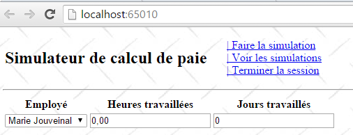
- Replace [localhost] with the computer's IP address:

The server returned a [400 Bad Request] response. The IIS Express server used by Visual Studio only accepts the name [localhost].
To make the developed application accessible at a URL such as [http://adresseIP/contexte/...], you must use a server other than IIS Express, such as an IIS server (not Express). To check if it is available (normally in Pro versions of Windows), go to the Control Panel [Control Panel\System and Security\Administrative Tools]:

This option is not always present. In that case, go to [Control Panel \ Programs] and install the Web Administration Tools.
 |
Once the [Internet Information Services (IIS) Manager] option is available, enable it:
 |
Start the default website. To do this, the [World Wide Web Publishing Service] must be running first:
 |
Once this is done, enter the URL [http://localhost] in a browser. First, verify that another web server is not already using port 80. If so, stop it.
 |
The IIS server has responded. Now replace [localhost] with your computer’s IP address:
 |
It works. Now let’s go back to Visual Studio:
- First, you need to launch Visual Studio in [Administrator] mode
 |
Once that’s done, you need to change the configuration of the web project you want to deploy [right-click on the project / Properties / Web tab]:
 |
You must select the local IIS server as the deployment server. Visual Studio sets the application’s URL. You can change it. Run the project by pressing [Ctrl-F5]:
 |
Now replace [localhost] with your computer’s IP address:
 |
If you don’t have an IIS server, you can use a free ASP.NET server such as [Ultidev Web Server Pro], available at the URL [http://ultidev.com/Download/]. Once installed, there are two ways to launch a web application with this server:
The quick way
Open Windows Explorer and select the folder containing the ASP.NET application you want to deploy:
 |
The web server will then start, and the web application will be displayed in a browser:
 |
- In [3], you can stop or start the web server;
- In [4], you can change the web application’s service port;
Before starting the server, the [UWS HiPriv Services] service below must be running:
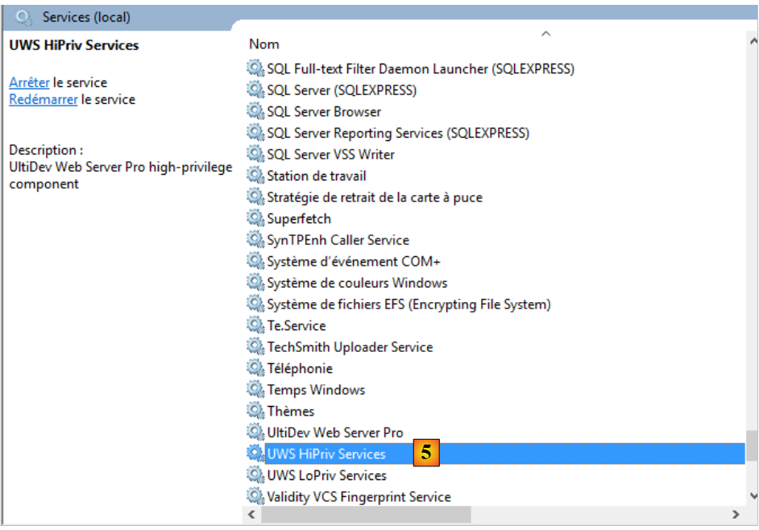 |
Once the server is running, the interface looks like this:
 |
Clicking the link [6] displays the application’s first page:
 |
You can then enter the machine’s IP address in place of [localhost]:
 |
So here as well, only the name [localhost] is accepted.
The long way
Launch the Ultidev Web Explorer application
 |
and follow these steps:
 |
 |
 |
- In [8], specify the folder of the web application to be deployed;
 |
- in [10-11], the web application must be accessed via the URL [http://localhost:81/];
 |
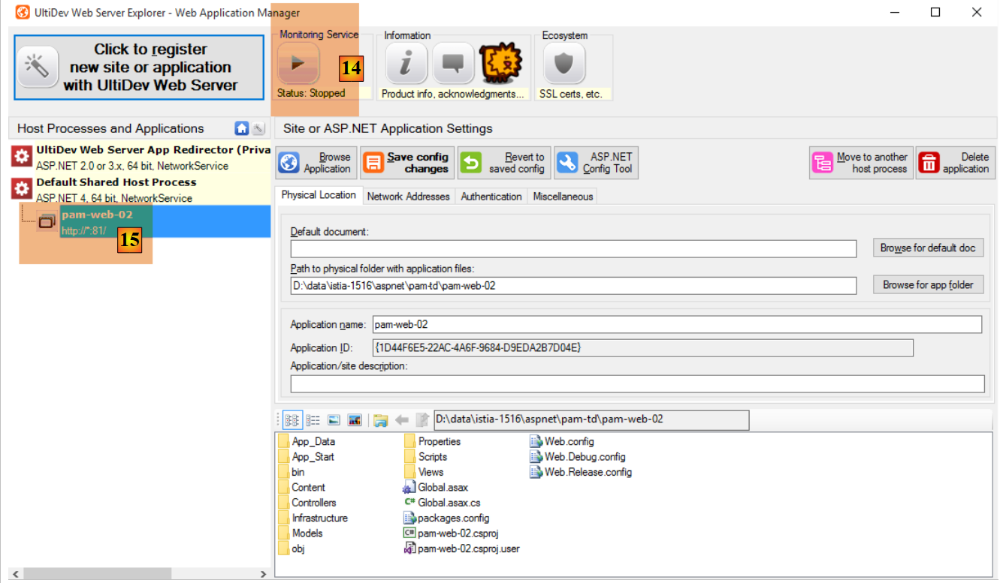 |
- Start the web server using [14];
 |
- access the URL [19];
 |
- In [20], we were able to access the desired page by using the machine's local IP address instead of the name [localhost]. That was exactly what we were looking for;
The Ultidev server is installed as a Windows service that starts automatically. You can disable the automatic startup of the Ultidev server as follows:
- Go to [Control Panel\System and Security\Administrative Tools];
 |
- [1, 2]: Select the properties of the [Ultidev Web Server Pro] service;
- [3]: Set it to manual startup.
To launch the server manually, use the [Ultidev Web Explorer] application, for example:
 |
9.27. Step 20: Generating a native Android app
When you have a Single-Page Application (SPA), you can generate a mobile executable (Android, iOS, Windows 8, etc.) using the [PhoneGap] tool [http://phonegap.com/]. There are other ways to do this, notably with the open-source product Apache Cordova [https://cordova.apache.org/]. The online tool available on the Phonegap website [http://build.phonegap.com/apps] “uploads” the ZIP file of the site to be converted. The home page must be named [index.html] and must be a static page, i.e., not generated by a web framework (ASP.NET, JEE, PHP, etc.). We will start by building this page.
9.27.1. The application architecture
It’s important to remember here that we want to create an Android app. Such an app often has the following architecture:
 |
- in [1], the user uses an Android tablet that communicates with one or more web services [2];
Let’s return to the APU model:
 |
- an initial page is loaded in the browser (the diagram above does not specify where it comes from);
- subsequent views are retrieved via Ajax calls [1-4]. No new pages will be loaded by the browser;
The initial view may or may not be served by the same server as the other views retrieved via Ajax calls. If it is not served by the same server, the JavaScript on the initial page must know the URL of the web server that will deliver the other views. This will be the case in the Android application we are going to build:
 |
- the static page [index.html] will be encapsulated within a native Android application [1] that has browser capabilities, and is therefore capable of executing the JavaScript embedded in the [index.html] page;
- this page will retrieve the other views via Ajax calls to the server [2]. To do this, it needs to know the web server’s URL;
We will refactor the [pam-web-02] application so that it operates in this mode. Thus, the first page will be as follows:
 |
- in [1], the URL of the application’s initial page. This will be provided by the Ultidev server discussed in Section 9.26;
- in [2], the user must enter the URL of the payroll simulator. We could hard-code it into the JavaScript of the initial page, but that would complicate testing: as soon as we change the IP address (or port) of the simulator, we would then have to change it in the JavaScript code;
- in [3], the [Login] link that will fetch the following view:
 |
- Note that in [4], the browser’s URL has not changed. It is still that of the initial page and will remain so for the entire lifetime of the application.
Once this view is loaded, everything works as before: the different views are loaded via Ajax calls. We will see that very little code needs to be modified.
9.27.2. Refactoring the [pam-web-02] project
Inside the [Content] folder of the [pam-web-02] project, we create the following [bootstrap] folder (the name doesn’t matter):
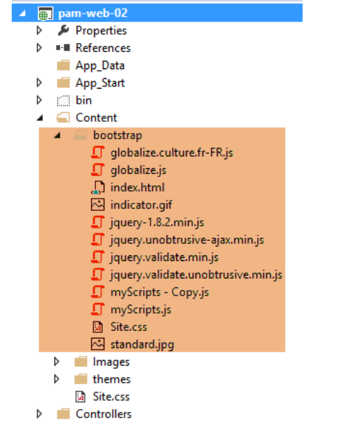 |
We have included the static page [index.html] and all the resources it needs (CSS and JS files). The [index.html] page uses the code from the master page [_Layout.cshtml] of the Visual Studio project, removing everything that is not static. This results in the following code:
<!DOCTYPE html>
<html xmlns="http://www.w3.org/1999/xhtml">
<head>
<title>Simulateur de paie</title>
<meta charset="utf-8" />
<meta name="viewport" content="width=device-width" />
<link rel="stylesheet" href="Site.css" />
<script type="text/javascript" src="jquery-1.8.2.min.js"></script>
<script type="text/javascript" src="jquery.validate.min.js"></script>
<script type="text/javascript" src="jquery.validate.unobtrusive.min.js"></script>
<script type="text/javascript" src="globalize.js"></script>
<script type="text/javascript" src="globalize.culture.fr-FR.js"></script>
<script type="text/javascript" src="jquery.unobtrusive-ajax.min.js"></script>
<script type="text/javascript" src="myScripts.js"></script>
</head>
<body>
<table>
<tbody>
<tr>
<td>
<h2>Simulateur de calcul de paie</h2>
</td>
<td style="width: 20px">
<img id="loading" style="display: none" src="indicator.gif" />
</td>
<td>
<a id="lnkConnexion" href="javascript:connexion()">
| Connexion<br />
</a>
<a id="lnkFaireSimulation" href="javascript:faireSimulation()">
| Faire la simulation<br />
</a>
<a id="lnkEffacerSimulation" href="javascript:effacerSimulation()">
| Effacer la simulation<br />
</a>
<a id="lnkVoirSimulations" href="javascript:voirSimulations()">
| Voir les simulations<br />
</a>
<a id="lnkRetourFormulaire" href="javascript:retourFormulaire()">
| Retour au formulaire de simulation<br />
</a>
<a id="lnkEnregistrerSimulation" href="javascript:enregistrerSimulation()">
| Enregistrer la simulation<br />
</a>
<a id="lnkTerminerSession" href="javascript:terminerSession()">
| Terminer la session<br />
</a>
</td>
</tbody>
</table>
<hr />
<div id="content">
<table>
<tr>
<td>URL du simulateur</td>
<td><input type="text" id="urlServiceWeb" name="urlServiceWeb" size="80"></td>
</tr>
</table>
<div id="erreur">
<h3>Réponse du serveur :</h3>
<div id="erreur1"></div>
<div id="erreur2"></div>
</div>
</div>
</body>
</html>
We have added the following:
- lines 27-29: we added the [Login] menu option to allow connection to the simulation service;
- lines 55-56: the simulator URL input field;
- lines 59-63: an error message if the connection fails;
The code refactoring is done only in the [myScripts.js] code on line 14 above. Nothing else changes. The code evolves as follows:
// au chargement du document
$(document).ready(function () {
// on récupère les références des différents composants de la page
loading = $("#loading");
content = $("#content");
erreur = $("#erreur");
erreur1 = $("#erreur1");
erreur2 = $("#erreur2");
// les liens du menu
lnkConnexion = $("#lnkConnexion");
lnkFaireSimulation = $("#lnkFaireSimulation");
lnkEffacerSimulation = $("#lnkEffacerSimulation");
lnkEnregistrerSimulation = $("#lnkEnregistrerSimulation");
lnkVoirSimulations = $("#lnkVoirSimulations");
lnkTerminerSession = $("#lnkTerminerSession");
lnkRetourFormulaire = $("#lnkRetourFormulaire");
// on les met dans un tableau
options = [lnkConnexion, lnkFaireSimulation, lnkEffacerSimulation, lnkEnregistrerSimulation, lnkVoirSimulations, lnkTerminerSession, lnkRetourFormulaire];
// on cache certains éléments de la page
loading.hide();
erreur.hide();
// on fixe le menu
setMenu([lnkConnexion]);
});
- lines 6-8: the IDs of the area that displays connection errors on the [index.html] page;
- line 10: the new link for connecting to the simulator;
- line 21: the error area is initially hidden;
- line 23: only the connection link is displayed;
On the [index.html] page, the connection link is defined as follows:
<a id="lnkConnexion" href="javascript:connexion()">
| Connexion<br />
</a>
The JS function [connexion] (line 1) is as follows:
var urlServiceWeb;
var erreur, erreur1, erreur2;
function connexion() {
// retrieve the urlServiceWeb from the web service
urlServiceWeb = $("#urlServiceWeb").val();
// retrieve the input form
$.ajax({
url: urlServiceWeb + '/Pam/Formulaire',
type: 'POST',
dataType: 'html',
beforeSend: function () {
// wait signal on
loading.show();
},
success: function (data) {
// displaying results
content.html(data);
// menu
setMenu([lnkFaireSimulation]);
},
error: function (jqXHR) {
erreur2.html(jqXHR.responseText);
erreur1.html(jqXHR.getAllResponseHeaders().replace(/\r\n/g, "<br/>").replace(/\r/g, "<br/>").replace(/\n/g, "<br/>"));
erreur.show();
},
complete: function () {
// wait signal off
loading.hide();
}
});
}
- line 7: we retrieve the URL entered by the user. It is stored in the global variable from line 1. This way, it will be available in the other functions of the file;
- line 10: We make an Ajax call to the simulator’s URL [/Pam/Form]. This URL renders the partial view for entering simulation data (employees, hours worked, days worked). In the initial version of [pam-web-02], this URL was sufficient. It was automatically prefixed with the URL that had brought up the initial page. Now, we assume that the initial page may be served by a server other than the one hosting the simulator. The URL [/Pam/Formulaire] must therefore be prefixed with the [urlServiceWeb] variable from line 1, which is the simulator’s URL (for example, http://172.19.81.34/pam-web-02). This must be done for all Ajax calls in the file;
- lines 17–22: if the connection is successful, the partial view [Formulaire.cshtml] is displayed, and a menu is shown containing only the link [Run Simulation] (line 21);
- lines 23–27: if the connection fails:
- on line 24, the HTML response sent by the web server is displayed (if there is one);
- on line 25, the HTTP headers sent by the web server are displayed (if it responded);
That’s it. If successful, the following page is displayed:
 |
We are now in the previous situation, where views are now obtained via Ajax calls. Thus, as shown above, clicking the [Run Simulation] link will be executed by the following code in the [myScripts.js] file:
function faireSimulation() {
// on récupère des références
var simulation = $("#simulation");
var formulaire = $("#formulaire");
// formulaire valide ?
var formValid = formulaire.validate().form();
if (!formValid) return;
// on fait un appel Ajax à la main
$.ajax({
url: urlServiceWeb + '/Pam/FaireSimulation',
type: 'POST',
data: formulaire.serialize(),
dataType: 'html',
...
});
// menu
setMenu([lnkEffacerSimulation, lnkEnregistrerSimulation, lnkTerminerSession, lnkVoirSimulations]);
}
- A single change has been made, on line 10, where the previous URL is now prefixed with the simulator's URL;
9.27.3. Testing the refactored project
In Section 9.26, we showed how to install the [pam-web-02] application on the Ultidev server. We will start from there:
 |
- In [6], we request the display of the page [bootstrap/index.html]. We get the following view:
 |
Let’s enter an incorrect URL:
 |
- in [10], the HTTP headers of the server's response;
- in [11], the HTML document from the server's response;
If you enter the correct URL:
 |
we get the following response:
 |
9.27.4. Creating the Android binary
We will create the Android binary from the static site we just created and tested[1]:


We add in [2] a [config.xml] file that will be used to configure the [Phonegap] plugin, which will generate the Android binary. Its code is as follows:
<?xml version='1.0' encoding='utf-8'?>
<widget id="android.exemples.pam" version="0.0.1" xmlns="http://www.w3.org/ns/widgets" xmlns:cdv="http://cordova.apache.org/ns/1.0">
<name>Pam</name>
<description>
IstiA - Université d'Angers
</description>
<author email="serge.tahe@univ-angers.fr">
Serge Tahé
</author>
<content src="index.html" />
<access origin="*" />
<allow-navigation href="*" />
<allow-intent href="*" />
<plugin name="cordova-plugin-whitelist" />
</widget>
- lines 7-9: enter your contact information here;
- lines 11-13: these lines allow the JavaScript embedded in the web application, which will run on the Android device, to request URLs outside the device;
We zip the contents of the [Content/bootstrap] folder:
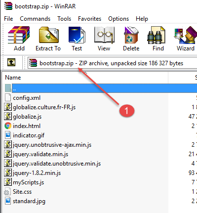
Next, go to the PhoneGap website [http://build.phonegap.com/apps]:
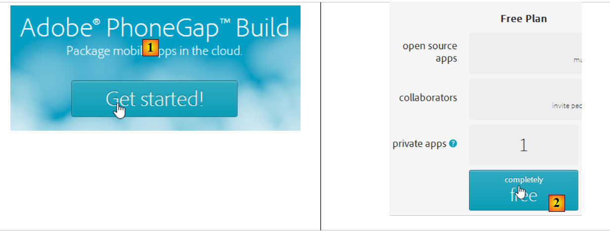 |
- Before [1], you may need to create an account;
- in [1], we get started;
- at [2], choose a free plan that allows only one Phonegap app;
- at [3], download the zipped app [4];
 |
 |
- at [5], enter the app’s name;
- click the link [6] to build the binaries for iOS, Android, and Windows. This may take a few seconds;
 |
- In [7-9], download the Android binary;
 |
Launch a [GenyMotion] emulator for an Android tablet (see section 11.1):

Above, we launch a tablet emulator with Android API 21. Once the emulator is running,
- unlock it by dragging the lock (if present) to the side and then releasing it;
- Using the mouse, drag the [Pam-debug.apk] file you downloaded and drop it onto the emulator. It will then be installed and run;
 |
Enter [1] the simulator’s URL as described in section 9.27.3. Once done, connect to the simulator using the link [2]:

Test the application on the emulator. It should work.